Stock Traders’ vs. Stock Investors' Roles in the Marketplace
Many people use the words "trading" and "investing" interchangeably when, in reality, they are two very different activities. While traders and investors participate in the same marketplace, they perform two very different tasks using very different strategies. Both of these parties are necessary, however, for the market to function smoothly.
Stock traders: Individuals or entities engaging in the trading of equity securities, or the transfer of financial assets in any financial market, either for themselves, or on behalf of someone else. They operate in the capacity of agent, hedger, arbitrageur, speculator or investor.
Stock investors: Individuals or entities who use their own money to purchase equity securities, which offer potential profitable returns in the form of interest, income or appreciation in value (capital gains).
There is quite a variation of characteristics. To go into further detail on investors and traders:
Stock investors
Stock investors are the market participants whom the general public most often associates with the stock market. They rely primarily on fundamental analysis for their investment decisions and fully recognize stock shares as part ownership in the company. Many investors believe in the buy and hold strategy, which, as the name suggests, implies that investors will buy stock ownership in a corporation and hold onto those stocks for the very long term, generally measured in years.
These investors, who purchase shares of a company for the long term with the belief that the company has strong future prospects, typically concern themselves with two things:
- Value - Investors must consider whether a company's shares represent a good value. For example, if two similar companies are trading at different earnings multiples, the lower one might be the better value because it suggests that the investor will need to pay less for $1 of earnings when investing in Company A, relative to what would be needed to gain exposure to $1 of earnings in Company B.
- Success - Investors must measure the company's future success by looking at its financial strength and evaluating its future cash flows.
Both of these factors can be determined through the analysis of the company's financial statements along with a look at industry trends. At a basic level, investors can measure the current value of a company relative to its future growth possibilities by looking at metrics such as the PEG ratio - that is, their price earnings (value) to growth (success) ratio.
Stock traders
Stock traders are market participants, either an individual or firm, who purchase shares in a company with a focus on the market itself rather than the company's fundamentals. A stock trader usually tries to profit from short-term price volatility with trades lasting anywhere from several seconds to several weeks. The stock trader is usually a professional. Persons can call themselves full- or part-time stock traders/investors while maintaining other professions.
Markets involved in the trade of commodities are beneficial to a stock trader’s strategy. After all, very few people purchase wheat because of its fundamental quality - they do so to take advantage of small price movements that occur as a result of supply and demand. Stock traders typically concern themselves with:
- Price patterns - Stock traders will look at past price history in an attempt to predict future price movements. This is known as technical analysis.
- Supply and demand - Traders keep close watch on their trades intra-day to see where money is moving and why.
- Market emotion - Traders play on the fears of investors through techniques like fading, where they will bet against the crowd after a large move takes place.
- Trader support - Market makers (one of the largest types of traders) are actually hired to provide liquidity through rapid trading.
Ultimately, it is traders who provide the liquidity for investors and always take the other end of their trades. Whether it is through market making or fading, traders are a necessary part of the marketplace.
Clearly, both traders and investors are necessary in order for a market to function properly. Without traders, investors would have no liquidity through which to buy and sell shares. Without investors, traders would have no basis from which to buy and sell. Combined, the two groups form the financial markets as we know them today.
Decision-Making Methods: Informed, Uninformed, Intuitive
There are many different types of stock traders in the market place with varying combinations of methods. The classifications can get confusing. Having said that, there are three very broad areas into which stock traders fall: informed, uninformed, and intuitive.
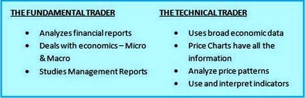{kind=link}
- Informed traders: This type of stock trader has information about the right side of the market. Again, this type of trader can fall into two more broad categories: fundamental and technical (of which high-frequency trading is one variety).
1. Fundamental traders: Fundamental traders spend their days looking through research, be it about the economy, a specific sector or a company. Research could include SEC filings, financial results, etc. There are many possibilities but the end goal is simple: To look at dozens or even hundreds of companies in order to find those that look the most undervalued.
Such traders will usually spend entire days trying to figure out why a company's stock has not increased more or decreased at a certain point in time.
2. Technical traders: These types of traders use stock charts to make trading decisions, relying on factors such as momentum, patterns, moving averages, etc. to make judgments before entering a trade.
In such an approach, tradesr might not even care which stock or commodity they are trading; all they need is the trading data to decide if they want to buy or sell.
They like to naturally let the market buy them in, and likewise sell them out.
3. High-frequency traders: High-frequency traders are basically an extension of the technical traders’ category. These high-frequency traders use complex algorithms to analyze multiple markets and execute orders based on market conditions.
- Uninformed traders: These are traders who take the opposite view of informed traders.
- Intuitive traders: Whilst this type of trading is not considered as standard as those above, many traders fall into this category. This type of trader develops a general feeling or an instinct, as to the momentum not only in the individual stock, but in the company itself, to find specific opportunities. This does not mean that charts are never used or a study of company fundamentals is never employed, to arrive at this intuitive decision. Intuitive traders might describe themselves thusly:
“I’m not a technician and I really don’t study charts. Also, I’m not big on fundamentals based on the nature of how long I hold a position. This does not necessarily mean that I don’t understand the fundamentals of each stock and what people generally expect, but for the most part I rely heavily on intuition. After watching the same 50-100 names, you start to easily understand how they trade and what moves them. It’s pattern recognition."
These traits overlap, making the stock market what it is - an exciting atmosphere made up of many types of traders. We will for the moment set aside uninformed and intuitive traders, and focus primarily on the types of informed traders.
Informed Traders: Fundamental Traders, Technical Traders
When day trading or long-term trading, fundamental and technical forms of analysis are two of the most common methods that may be employed. These forms work from the same data, but the way they use the information is completely different. It is possible to use both fundamental and technical analysis together, but it is more common for a trader to choose one or the other.
A. Fundamental traders
Fundamental traders believe that the markets will react to events in certain ways and that they can predict future market prices based on these events. For example, if a company receives regulatory approval for a new product, a fundamental trader might expect the company's stock price to rise. Conversely, if a company has a financial scandal, a fundamental trader might expect its stock price to fall. Fundamental traders need access to all of the obtainable information as soon as it is available, and are therefore institutional traders often have large support teams. Fundamental analysis is as old as trading itself, and has traditionally been done manually, but as computing power increases it has become possible for some fundamental information to be processed automatically.
Examples of data useful for fundamental trading:
- Economic reports: This involves the use of figures which can be generally split into either growth or inflationary. It is important to understand the current economic cycle: Six years ago, investors were looking for “price stability;” therefore inflation was a major issue, and CPI (corruption perception index) and PPI (producer price index) figures were the focus. Now investors are focused much more on growth, so GDP (gross domestic product) and sentiment figures are key. Other figures to consider are weekly and monthly economic data such as Non-Farm Payrolls and the Philadelphia Fed.
- Political factors: Recent factors affecting fundamental trading decisions include the Euro Zone debt and the global slowdown. Also, key politicians and market commentators can affect the markets.
Why fundamental traders think their method is better: Many fundamentalists think that technical trading is too complicated. Fundamental-based investors view charts as nothing more than a ghost of true facts and numbers. They prefer to rely on actual company revenues, profits, cash flows, assets and liabilities. Fundamental traders also keep an eye on new products, brokerage reviews and government statistics.
The downside: The fundamental view is anything but etched in stone. The so-called concrete numbers can be manipulated, adjusted and interpreted in any number of ways. Quite often, the majority rules in how those "facts" are played out in the pricing of stocks. You often hear on the news that stocks moved higher or lower based on some report or event. One market vagary is that most traders play follow-the-leader and have little idea of how the fundamentals are affecting price movement. It’s an inaccurate perception is that most investors interpret the same fundamental data in the same ways.
B. Technical traders
Technical traders use stock charts; in other words, trading information - such as previous prices and trading volume - along with mathematical indicators to make their trading decisions. This type of stock trader relies on factors such as momentum, patterns, moving averages, etc. The basic premise is that all assets move based on offer and demand more than anything else.
Certain formations and price relationships happen regularly when viewed from a technical perspective. Such formations as head and shoulders, tops and bottoms, double and triple tops and bottoms, price channels and triangles occur quite frequently. Along with price breakouts and failures, higher lows and lower highs, price is consistent in testing itself. Support and resistance price points act as magnets. Stock prices are always testing previous price action. The outcome determines further price action, which develops over time into some kind of measurable trend.
This information is usually displayed on a graphical chart and is updated in real time throughout the trading day. Technical traders believe that all of the information about a market is already included in the price movement, so they do not need any other fundamental information (such as earnings reports). In many instances, individual traders tend to be technical traders.
Now modern technical analysis is usually performed by the trader interpreting their charts, but can just as easily be automated because it is mathematical. Some traders prefer automatic analysis because it removes the emotional component from their trading, and allows them to make trades based purely on the trading signals.
An example of technical trading can be seen by interpreting the daily chart below for Google (Nasdaq: GOOG).
{kind=link}
Firstly, given that the chart shows the shares’ price over the last 12 months, the question that all traders ask is, “Will I buy this stock?”
As you can see, the share price is showing an upward trend, so a technical trader would probably buy, particularly on the dips. Many traders suffer from a fear of buying something that is trending up due to the hunch that the prices are bound to fall soon, especially if the share prices are breaking into new high ground. This was one of the dilemmas encountered with many of the stock prices during the rally of 2013.
This is one simple example using technical analysis. It has been based on a simple price vs. time chart. It has not involved hours or days studying management accounts, directors’ reports, and financial statements. The technical trader, at times, probably has little or no idea what the company does, who the management is, how many divisions there are, or where it is based. The trader has arrived at this simple conclusion based on what is graphically represented.
This type of trading can be applied to any financial instrument in any market anywhere in the world. Once technical traders have learnt the basics of understanding and interpreting charts, they just need to understand the nuances of the particular market on which they wish to trade.
Which do I choose - fundamental or technical?
It is interesting to note that many traders believe that either fundamental trading or technical trading can exist as a stand-alone strategy! The truth may be more complicated: Each type of trading benefits from the other.
Why technical traders need fundamental traders: All technical trading is executed by comparing prices in the current environment with prices in a previous environment. Highs, lows, moving averages, trend lines and price patterns make up the technical trader's arsenal for decision making. There are many different indicators and oscillators also available to the technician.
However, none of those changes in price could occur without investors using fundamentals to make decisions in the first place. That takes into account all the numbers and comparisons to previous statistics and expectations. This would support the argument that fundamental-based investing provides the foundation for technical trading.
If all trading decisions to buy or sell were made without the availability of consulting fundamentals - such as annual reports, company news, and the weather or government statistics - then there would be little or no basis to make a reasonable decision.
Therefore, it seems that fundamental traders can function alone, and technical trading becomes an extension of fundamental trading without concern for the fundamentals. In other words, fundamentals came first and technical analysis has been derived from it.
What fundamental traders can learn from technical traders: You can analyze the fundamentals until every fact and figure makes sense. Still, that will not tell you where prices may go in the future. As long as most investors continue to prefer fundamental analysis, technical traders will have a firm basis on which to practice their analytical methods.
C. High-frequency traders
High- frequency traders are technical traders who use complex algorithms to analyze multiple markets and execute orders based on market conditions. Typically, the traders with the fastest execution speeds will be more profitable than traders with slower execution speeds. They normally use a program trading platform that uses powerful computers to transact a large number of orders at very fast speeds.
In 2009, studies suggested high-frequency traders accounted for 60-73% of all US equity trading volume, with that number falling to approximately 50% in 2012.
Many high-frequency traders provide liquidity and price discovery to the markets through market making and arbitrage trading. High-frequency traders also take liquidity to manage risk or lock in profits.
High-frequency trading (HFT) is the use of sophisticated technological tools and computer algorithms to rapidly trade securities. HFT uses proprietary trading strategies carried out by computers to move in and out of positions in seconds or fractions of a second. High-frequency traders focused on HFT rely on advanced computer systems.
There are two types of high-frequency trading:
- Execution trading - When an order (often a large order) is executed via a computerized algorithm. The program is designed to get the best possible price. It may split the order into smaller pieces and execute at different times.
- The “set up” - The second type of high frequency trading is not executing a set order, but looking for small trading opportunities in the market based around certain programmed factors. This is also known as a “set up,” such as the beginning of a pattern that a trader has deemed to be profitable, which is usually preceded by a trading signal like a technical indicator or potential catalyst (market mover).
High-frequency trading is quantitative trading characterized by short portfolio-holding periods. All portfolio-allocation decisions are made by computerized quantitative models. The success of high-frequency trading strategies is largely driven by their ability to simultaneously process volumes of information, something ordinary human traders cannot do. Specific algorithms are closely guarded by their owners and are known as "algos."
High-frequency trading strategies
High-frequency traders move in and out of short-term positions aiming to capture sometimes just a fraction of a cent in profit on every trade. High-frequency traders do not employ significant leverage, accumulate positions or hold their portfolios overnight; they typically compete against other high-frequency traders, rather than long-term investors. As a result, high-frequency traders have a potential Sharpe ratio (a measure of risk and reward) thousands of times higher than traditional buy-and-hold strategies.
High-frequency traders are often dealing in versions of stock index funds like the E-mini S&Ps because they seek consistency and risk-mitigation along with top performance. They must filter market data to work into their software programming so that there is the lowest latency and highest liquidity at the time for placing stop-losses and/or taking profits. With high volatility in these markets, this becomes a complex and potentially nerve-wracking endeavor, in which a small mistake can lead to a large loss. Absolute frequency data play into the development of the trader's pre-programmed instructions.
Problems associated with high-frequency trading
The effects of algorithmic and high-frequency trading are the subject of ongoing research. Regulators claim these practices contributed to volatility in the May 6, 2010 Flash Crash and find that risk controls are much less stringent for faster trades.
Knowingly or not, high-frequency traders have discovered their quotes can blind other investors to the true market price, and this has quickly become one of their biggest weapons against the investing public. High-frequency traders can afford the pipelines, microwave-transmission towers, and other necessary technology to ensure that they are the first to see and react to the "real" price of assets they are trading. The rest of the traders are left to trade on the equivalent of yesterday's prices, as the high-frequency traders' nanosecond trading make a full second seem like a full day's advantage.
An example of HFT
One example of an order that can help a HFT trader identify these short-term fluctuations in liquidity and price trends is a flash order. Flash orders are typically sent to certain traders in a market for less than one second before being routed more widely.
The speed of flash order execution can save the trader placing the order some money, if only the slightest amount, while also providing HFT firms with a potential profit opportunity.
Conclusion
Members of the financial industry generally claim high-frequency trading substantially improves market liquidity, narrows bid-offer spread, lowers volatility and makes trading and investing cheaper for other market participants.
Swing Traders
Swing traders use a slightly longer time horizon than do day traders, watching a stock for weeks or months before trading. They try to follow the momentum of the stock market when buying stocks. When markets are moving to the upside swing, traders will buy stocks that fit whatever criterion they are using to select stocks, selling when this swing in the market has topped or nearing what they have calculated to be the top.
This type of stock market trading relies on careful monitoring of fundamental and technical analysis. Swing traders often specialize in a certain business or industry so that they become experts in the movement within those stocks. They also have more time to study the company financial reports and industry forecasts.
Since swing trading does not require hours of daily monitoring, it is a good strategy for the trader who wants to make money from stock market trading without turning it into a full time job. Even the study of reports could be done during the daily commute or lunch hour so that the swing trader stays well informed.
The core philosophy behind swing trading
The concept is easy to understand. Stocks go through four stages:
- The Basing Stage: Stocks consolidate as buyers and sellers move into equilibrium.
- The Advancing Stage: After a breakout from stage one, stocks move into an uptrend - the second stage.
- The Top Area: The uptrend stalls and the stock tops out. This is where you likely see a head and shoulders pattern or a double top.
- The Declining Stage: The stock now falls into a downtrend as the sellers take over and drive the stock to lower prices.
This cycle is repeated over and over again for every stock in all time frames. Here is a graphical representation of the four stages:
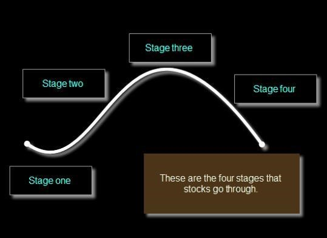
{kind=link}
Example: Now take a look at the following stock, Loews Corporation (NYSE: L):
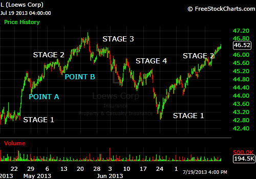{kind=link}
After a consolidation period, this stock broke out in May, where it went through a stage two uptrend. This is the time to be a buyer: at pullbacks on the uptrend - stages within stages - Point A or Point B.
And the cycle is expected to repeat
Also, when a stock is in an uptrend, and closes over the previous swing point high on increased volume, then the trend is "confirmed" and has a higher probability of continuing higher than if the stock closed over the previous swing point high on lower volume.
When a pullback stops going down, the cycle starts over. It is in stage one.
Now, the swing trader looks for a signal (candlestick pattern) that the stock is moving into a new “mini uptrend” (stage two). This is where they buy the stock. And if it moves higher, they have a winning trade (assuming that they can get out at stage three - before stage four!)
This is the core philosophy behind swing trading: trading the stages within stages or “trading the swings.”
Advantages of swing trading
The advantages of swing trading over other forms of trading are numerous:
- The anticipated returns tend to be higher than what a buy and hold investor would expect, making swing trading an ideal way to "trade for a living." It is important to remember, however, that like all forms of trading, swing trading is susceptible to market fluctuations and cycles. One needs to be very careful to set aside funds during the good months in order to have money available to pay the bills during the lean months. And as with any form of trading or investing, there certainly will be lean months.
- When trades are executed properly, the swing trader will experience much less risk than the long-term player. Long-term investors are forced to ride out the bear market syndrome, whereas swing traders have the freedom simply to exit losing trades and step aside. Or they can short the market and make money while the investing world suffers through a drawdown.
- Swing traders are not committed to watching the market fluctuations. They can do their market research in the evening when the markets are closed, and place any new trades the next morning when the markets open. Once their trades are executed, they can input their target and stop loss orders and then turn off the computer and go about other business. While the potential returns of overnight and day trading are greater, swing trading offers a more efficient - and hence more attractive - return due to its less labor-intensive requirements.
- Finally, to swing trade well, there is no:
- Poring over financial statements as with buy-and-hold investors,
- Catching market tops and bottoms as with position traders,
- Seeing the bulk of your profits evaporate on overnight gaps that go against you as with overnight traders, or
- Learning the sophisticated trading platforms, software and devices required for day traders.
Swing trading provides the greatest amount of return for the least amount of work of any trading style! And you follow one simple rule - “Trade in the direction of the market.” In other words, if the market is trending up, trade long positions. If the market is trending down, trade short positions - a greater chance of success is ensured.
Buy and Hold Traders
http://www.investopedia.com/terms/b/buyandhold.aspBuy and hold traders, also called long-term traders, are stock market investors who are buying stocks and holding them for a long period of time. This category most likely constitutes the largest group of people who are buying stocks, as it requires the least amount of time spent focused on the stock market.
Many buy and hold traders believe the best way to have exposure to the stock market is to buy great companies and hold them through any market condition. When they buy stocks with the intention of holding them for years, they are more likely to steer clear of trendy companies or up-and-coming, high risk businesses.
Benefits of buy and hold trading
On the whole, for long-term investments, time spent in buy and hold trading is much less compared to time spent on medium- and short-term investments. Very long-term investment is not time-sensitive, while in shorter-term investment, you have to take timely action.
Being a passive, long-term investor has many advantages over other types of trading:
- Fewer fees and commissions - Fees are often overlooked by traders. But when trading with small amounts of money, fees and commissions become even more important. Learning to control impulse trading and doing far less portfolio management may be the most profitable move a trader can make. Many believe that the big money in investing is made by diligent, long-term traders - buy and hold traders.
- Low maintenance - Buy and hold traders are not required to spend a lot of time keeping track of the stock market daily movements. The practice of watching daily price movements is highly counterproductive to the temperament a long-term investor must maintain.
- Less nerve-wracking - Companies that are typically chosen for buy and hold portfolios are less volatile than the average stock. Due to the lower volatility, there is less chance that a stock in a buy and hold trader’s portfolio will suddenly gap-up or gap-down overnight. The stock price fluctuations are more evident for the short-term trader - as buy and hold investors, time is on their side, and so if their stock goes down from where they bought it, they don’t have to worry as long as they still think the company is great.
- Bonus for dividend growth investors - If they are dividend growth investors, there is an additional bonus to being a buy and hold investor. As the dividend rate continues to rise, their yield on cost will increase as well!
- As the company grows, the dividends and bonuses are added to the net investment.
For example, look at the chart of Microsoft (Nasdaq: MSFT) below - $21 invested in 1 share of Microsoft's IPO on March 1986 is worth $10,368 when the share price reached $36 in the middle of July 2013 due to the stock being split 9 times. It has given 49,371% of returns in the buy and hold strategy.
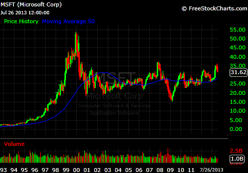{kind=link}
- More shares may be allocated - Some companies convert the profit into shares and allot them to the shareholders. So the portfolio grows several fold in the long term.
- Tax benefits - One reason many traders prefer to buy and hold investments is that they defer capital gains taxes while the investment continues to earn additional money. It is actually enabling them to make money from the money they would have owed in taxes, which further increases their earnings over time.
- A proven strategy - The stock market record over the long term has shown, despite times of negativity, about a 9% annualized return over the past 100 years. It is common knowledge, as quoted by Benjamin Franklin: “Slow and steady diligence is the true way to wealth.”
Disadvantages of buy and hold trading
- The buy and hold strategy may give the appearance of a safer investment model, but no strategy is above risk. For example, traders who bought Microsoft in 2005 would have made less than 2% as of July 2013 on that investment (see the chart above).
- The other buy and hold problem is the onset of bear markets. If a buy and hold trader purchases a stock prior to a swift market decline similar to the ones in 1987 and 2002 and again in 2008, the traders may have to wait five to 10 years to break even on their initial investment. A buy and hold trader may be required to undertake more fundamental analysis before making an investment decision - which involves a great deal of parameters. Then, over time, these fundamentals can change - the political scenario, war and famine, supply and demand of the products, etc., can all affect the outcome of the profit.
Many of the shares that were good a decade ago may not be so good in today’s scenario.
With the apparition of the Apple iPad, the digital world took a different path. Until 2010, Advanced Micro Devices (NYSE: AMD) was one of the kings in the processor design and marketing for personal computers. AMD was not as efficient in terms of processing speed as a company such as Intel (Nasdaq: INTC), but had significantly cheaper costs. Now, however, this is a company battling to survive!
{kind=link}
3. A buy and hold trader will not be able benefit from the price swings when holding the shares for long periods of time, whereas in shorter-term investment - as with swing trading - the buy and hold trader can catch most of the swings. The sum of the price swings will be several times more than the total movement of the price.
4. One commonly overlooked problem for the buy and hold traders is the fact they have to buy and hold. Making money in the market is not like working a job wherein more effort equals greater results. So, traders will have to fight the urge to overtrade, as the key to a successful buy and hold strategy is quality, not quantity.
When to sell
A buy and hold trader should know when the strategy isn’t going to work or when it makes more sense to sell the stock they intended to hold until retirement or later. There are exceptions to every rule, including the buy and hold strategy. Here are a few situations when they may decide to sell their stocks rather than hold them:
- Company files bankruptcy.
- CFO indicted for accounting problems or theft.
- Company does something that goes against personal values or beliefs.
Conclusion
Buy and hold trading is simply another method of investing and profiting in the stock market - the long-term investment strategy.
For a small investor who does not care to analyze the market, does not know to shift sectors, cannot buy on the lows and sell on the highs, it is better to buy blue chip or budding blue chip company stocks, with a good spread, and hold them for a long period of time. At the extreme, such traders will hold the stocks indefinitely, and sell only if they need that money.
Value Traders
Value trading is based on the ideas that Ben Graham and David Dodd started teaching at Columbia Business School in 1928. There are many interpretations of what value trading is, but the basic concept is as follows:
Essentially a value trader wants to buy stocks at a discount to their intrinsic value. Intrinsic value is calculated by taking a discount to future cash flows. Therefore, if the stock price of a company is lower than the intrinsic value by a “margin of safety” (normally around 30% of intrinsic value), then the company is undervalued and worth investing in. Generally, value stocks are companies that are in decline, but the market has overreacted to their situation and the stock is trading lower than their intrinsic value.
Therefore, a value trader is seeking assistance from financial analysts, statisticians, actuaries, macro-economists, industry economists, market professionals, accountants, engineers, scientists, computer programmers, librarians, and research assistants.
Not many traders become value traders, because there is a great deal of effort required to make these trades work. The goal of a value trader is to make money on cheap stocks - which is harder than it sounds and can take years to play out.
Consequently, the long-term rewards don't go to people who think value investing is easy. Superior returns can be earned only by those who know that it is hard - and stay put.
The value trader, perhaps more than any other type of trader, is more concerned with the business and its fundamentals than with other influences on the stock’s price.
Fundamentals, such as earnings growth, dividends, cash flow and book value are more important than market factors on the stock’s price. Value traders can also be classed as buy and hold investors as they are with a company for the long term.
If the fundamentals are sound, but the stock’s price is below its obvious value, the value trader knows this is a likely investment candidate. The market has incorrectly valued the stock. When the market corrects that mistake, the stock’s price should experience a nice rise.
Value trading guidelines
Here are some guidelines that value traders look for in a potential investment. Investors should settle on a formula that works for them, but it will probably include as a minimum these elements:
- A Price Earnings Ratio (P/E) in the bottom 10% of its sector
- A PEG of less than one. A PEG (P/E growth of earnings) of less than one may indicate the stock is undervalued.
- A Debt to Equity Ratio of less than one.
- Strong earnings growth over an extended period. A realistic number might be in the 6-8% range over seven to 10 years.
- A Price to Book Ratio of one or less.
- Not paying more than 60-70% of the stock’s intrinsic per share price.
Finding value trades
To find truly undervalued stocks, value investors follow a three-step process:
- They sort stocks by price/earnings (P/E) or other metrics and concentrate on the lowest P/E stocks. This step enables value investors to reduce the number of stocks they will examine more closely and at the same time identify potentially undervalued stocks by focusing on the lowest P/E stocks.
- Next, value investors individually value each of the low P/E stocks to find which of the stocks are truly undervalued. A stock may have a low P/E because it is a bad stock. The only way to differentiate the good from the bad is to value all stocks in the low P/E group.
- The final step in the value-investing process compares the intrinsic value of each stock to the market price. If the stock price is lower than the intrinsic value by more than the so-called “margin of safety” (normally around 30% of the intrinsic value) the stock is considered truly undervalued and may be worth investing in.
An example of value trading gone wrong!
The classic case is Research in Motion, now Blackberry Limited (Nasdaq: BBRY).
- In January 2007, RIM was trading at a high 55 times P/E multiple. A computer company called Apple had reinvented itself as an MP3 player company and was unveiling a new phone set to launch in the summer.
- By the end of December 2009, market share for Apple’s iPhone iOS as a percentage of US smartphone OS was 25% while RIM had increased from 28% to 41% in that same period. Though RIM had grown its market share, fears of iOS growth had toppled the P/E multiple to around 17 times.
Many traditional value traders viewed the situation in the following way:
- RIM is holding up pretty well compared to the iPhone, yet their P/E multiple is getting destroyed. It’s trading at near the historical average S&P 500 P/E multiple of 15 times.
- Apple hasn’t historically been strong in the enterprise, so maybe iPhone will just be a consumer phenomenon that doesn’t break through to business users.
- Android is irrelevant with 5% market share.
- The smartphone market is growing rapidly and RIM is the clear leader. RIM is still growing north of 35% and generating nearly $2.5B in net income.
These value traders still saw RIM as cheap and sound. However, two years later, RIM was trading at a 3.5 times P/E multiple and topline growth had screeched to a halt. Market share for RIM had contracted to 16% while iOS and Android combined for 77% market share. In fact, in 2012, RIM posted a net income loss of $847M. Investors lost a great deal of money and were left scratching their heads.
What happened?
1. Technology adoption accelerating - New technologies are being adopted much faster than ever before. While technologies from the early part of the century like electricity, automobiles and the telephone took well over 50 years to reach 50% adoption, newer technologies like Internet, PCs, smartphones and tablets are being adopted much faster.
2. Internet way of life - An individual’s interaction with the world generally takes on three forms: consuming, communicating or creating. Historically these three mediums required a very different set of products and services to help them get the task done. Today all of this happens digitally.
3. Software changing the world - Technology is upending markets and is becoming a threat to value traders. In the case of RIM, the company thought that their scale was defensible and stopped innovating on the operating system, favoring battery life instead. Apple’s iPhone operating system and associated software was an order of magnitude better than RIM and attracted consumers. Interestingly enough, as of July 2013, Apple was dangerously close to losing their own software battle to Google with mobile versions of Google Maps, Gmail and Google Voice being far better than their iOS counterparts.
Conclusion
While there may still be opportunities for value investing, a value trader needs to be cautious of businesses that appear to be on a slow decline. With the rate of technology adoption accelerating, the internet being a way of life and software consuming the world, businesses that refuse to embrace or adapt don’t just slowly decline; they fall off a cliff and take their cash flows with them.
However, many value traders have made fortunes using a value-based approach to trading, which suggests a philosophy that works over time if they buy carefully and hold for the long term.
Trend Traders
Long-term trends can be highly lucrative for astute traders who can correctly identify them and then properly manage their position - and their emotions - for the duration of the trade.
Trend traders can have a longer-term approach to trading. They will try to find a great up trending stock, buy it and ride it until the trend changes. After all, if a stock keeps going up, wouldn’t it be great to just buy it and let it double, triple, do what it does?
Because up trending stocks go through stages of higher highs and higher lows, these traders should have a loose stop and should not be worried about outside factors such as their stock being overextended, as long as the stock is still going up.
Trend-following trading is reactive by nature. It does not forecast or predict markets or price levels. Prediction is impossible. Trend trading demands self-discipline to follow precise rules (no guessing or wild emotions). It involves a risk management system that uses current market price, the equity level in the trader’s account and current market volatility. Trend traders use an initial risk rule that determines position size at the time of entry. This means they know exactly how much to buy or sell based on how much money they have. Changes in price may lead to a gradual reduction or increase of their initial trade. On the other hand, adverse price movements may lead to an exit for the entire trade. Historically, a trend trader’s average profit per trade is significantly higher than the average loss per trade.
Within trend trading there are systematic trend traders who can be identified as:
….traders following non-emotional sets of trading rules often based on mathematical models of market behavior. Systematic trend traders use their judgment and intuition in designing their market models and trading systems.
Trend trading is based around the human element - this is the core to succeed in trend trading. It takes discipline and emotional control to stick with trend trading through inevitable market ups and downs. Trend traders seek to capture the majority of a market trend, up or down, for profit. It aims for huge profits in all major asset classes - stocks, ETFs (exchange-traded funds), LEAPS® (long-term equity anticipation securities), options, bonds, currencies, futures and commodities.
Trading the trend
Trend traders believe that the real money is made on established trends. Financial success is about repeatedly identifying high-probability candidates and taking a chunk out of the proven market momentum. Therefore, when trading trends, the trend trader:
- Identifies the trend - Trend traders trading with the trend of the markets significantly increase the chances, or probabilities, for a trade to be successful. This approach is very straightforward until they need to break down the trend time frame. The yearly, monthly or weekly trends can be moving in different directions and it is important that they only choose candidates that have internal forces working together. They see the longest time frame as the overriding trend that must be respected as the driver of direction.
- Trades breakouts - Trend traders use the price breakout strategy by looking for new highs/lows on a monthly, weekly, daily or minute interval basis and the high odds of the future continuation of this momentum strength.
Benefits of trend trading
As long as a trend trader has market data each day, such as CNBC, news, fundamentals, broker opinions, talking heads, etc., everything else is unneeded or unimportant for making the big money.
The trend trader can benefit from this strategy in many ways, such as:
- Profit in up and down markets - Either a bull or bear market by following the trend to conclusion.
- No more buy and hold, analysts, or news is needed - Trend traders’ decision-making doesn’t involve discretion, guesses, gut feelings, or hunches. It’s not day trading or “buy and hope.” It doesn’t involve passive indexing, in and out trading, or fundamental analysis. No more 24-hour news cycles, daily turbulence, or sensational hype.
- No predictions necessary - Market trends are always happening - trending up and down. The trend trader reacts to the trend but never anticipates the beginning or end of a trend, only acting when the trend changes.
- Big money is made by letting profits run - Trend traders try to compound absolute returns.
- Risk management receives top priority - Trend traders always have defined exit protocols to control management of trades executed. Stop losses and proper leverage usage are standard practice.
- Takes advantage of mass psychology - Trend traders take advantage of other traders’ panicky mob behavior. Strict discipline minimizes behavioral biases. It solves the eagerness to realize gains and reluctance to crystallize losses.
- Scientific approach to trading - Trend traders follow strict scientific principles. They follow a process, not an outcome, because of rigid rules based around numbers.
- Strong historical performance in crisis periods - Trend traders are adaptable to differing climates and environments performing best during periods of rising volatility and uncertainty.
- No traditional diversification - Trend traders are not restricted to any single market or instrument. A focus on price action allows trend following to be applied to an exceptionally large variety of markets. Price is the one thing that all markets have in common - e.g., a trend trading system for treasury bonds should also work on the Euro and stocks.
Rules for trend trading
- Believe what you see, not what you hear or read - In other words, read the charts - not the news! Trust that price and price patterns are accurate reflections of the underlying fundamentals - sustained price movement with supporting economics.
- Determine the market trend - This could be a corollary of the above point - The markets can vary greatly from day to day. Volatility is certainly part of the market scenario. Therefore, the direction of the market needs to be determined and the trend established before trading - hence the following of charts by the trend trader.
- Finding Breakout Candidates - A trend trader will be looking for breakout candidates if the major indices are all bullish.
Example of a breakout
As you can see below, the current price pattern on the chart for Stemline Therapeutics Inc. (Nasdaq: STML) is showing a clear pattern of higher lows and higher highs. Traders must regard that information as being more valuable than what is said or written about the market.
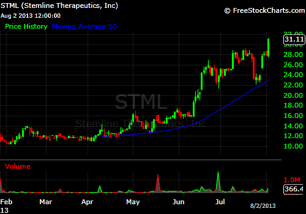{kind=link}
- Market correlations should not be over-emphasized - Correlations from yesterday do not mean they will be the same today - market movement of one security can affect the behavior of another security, and vice-versa.
- Set and forget trades - Money-management rules are necessary in order to maximize profits.
- Buy dips in uptrends and sell rallies in downtrends - This is the “golden rule” of trading. No matter the strength of a trend, there will always be intra-day or intra-week countertrend reactions that provide opportunities for astute traders. Often times, these countertrend moves follow news that contradicts the prevailing pattern or trend. This generally leads to an opportunity to buy a dip in the uptrend, or sell a rally in the downtrend.
- Don’t try to pick the top or bottom - “Buy high, sell higher.” Trend traders usually want to participate in the top third of a move because that is when the rewards are greatest and occur fastest. They rely on two triggers to time their trades:
- Zone trades - Wherein they buy or sell at support or resistance; and
- Momentum trades - Wherein they buy based on overall pattern and shorter-term momentum.
Problems encountered
Trend traders, no matter what the time frame, are likely to encounter these major problems:-
- False starts - Also known as whipsaws, false starts occur when the setup gives a positive signal, immediately followed by a reversal. Trend traders are stopped out of their position when the setup gives another buy signal.
- Shakeouts - This happens when a dramatic change in market conditions occurs, such as uncertainty or recent bad news circulating around a particular security or industry that forces traders to sell their positions, often as a loss. When a stock price is moving up - even though the trend trader may continually move the stops up - sometimes they are shaken out, no matter how strong the trend, even when applying some kind of filter. And they are going to be expensive because of the filter.
Example
This classic fast-trending stock, Nu Skin Enterprises, Inc. (NYSE: NUS) increased by more than 100% in the months of January to August 2013. The stock completed a broad double bottom, with a breakout at [A] and again at [B], and is continuing its upward momentum.
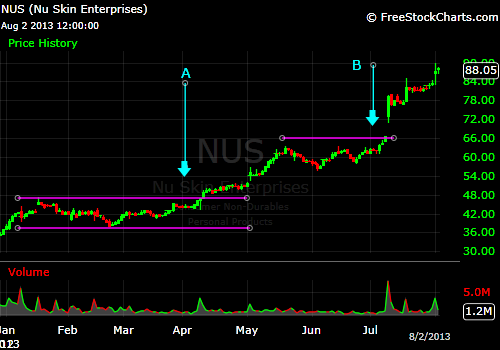{kind=link}
Staying with the trend is difficult. Insiders or professionals had recognized the stock's value and tried every trick in the book to shake out existing positions and claim a bigger stake for themselves. There are many potential false breaks or shakeouts.
- Late exits - Trend-following systems either suffer from a large number of shakeouts or are slow to exit when the trend reverses, and often both.
- Taking profits too early - Apart from systemic problems, the human aspect has to be considered.A trend trading system builds psychological pressure as the trader witnesses repeated gains followed by significant retracements and frequent late exits at trend reversals. Pressure can build to such an extent that the trader attempts to take profits at a perceived high point in the trend. At this point the trader is following emotions rather than a system - a recipe for disaster.
Conclusion
When developing their trading system, trend traders should consider the time frame that they are trading; their transaction costs; their ability to endure frequent stops; and their tolerance for strong corrections. Finally, they need to decide whether they are going to trade fast-moving, highly volatile stocks (with greater risk) or slower, steadier blue chips.
KISS Traders
A KISS trader realizes that the most profitable trades are often those that are the simplest to spot. This type of stock trader recognizes that despite its simplicity, it is the smartest type of trade because it produces the greatest profits.
KISS is an acronym for the design principle "Keep it simple, Stupid!"
The stock trader who adheres to this principle must be aware that it does not mean throwing out all the technical analysis and indicators but to simply (as it says) keep it simple.
Occam's Razor states that one should make no more assumptions than needed. Put into everyday language, it says, “The simplest explanation is the best”.
The principle is often expressed as “Entia non sunt multiplicanda praeter necessitatem”, or "Entities should not be multiplied beyond necessity".
Applying the principle
This principle can be applied to nearly every facet of life and trading, and is positively correlated with experience. The more you know about any subject, the quicker you will be able to find elegant and simple solutions.
A KISS trader, therefore, applies the KISS principle to the world of trading and investing. Complicated trading strategies and technical analysis, although sometimes psychologically appealing, can be very counterproductive to the bottom line. As in most things in life, simple is truly better when it comes to trading strategies.
Bear in mind that a strategy is not just about entry points. A good trading strategy includes multiple things such as what and when to buy, where to place stop loss orders and when to take profits, risk management, position sizing, expectancy, etc. A KISS trader usually has good discipline in regard to selection and application.
An example of a simple trade by a KISS trader
Apple Inc. (Nasdaq: AAPL) - Hourly chart. As you can see from the hourly chart below, this stock trends very nicely. By simply focusing on price action, support and resistance levels, volume, trend lines and chart patterns, it is quite easy to trade this stock profitably.
Prior to this chart there was a breakout to the upside, then a reversal bounce following, which would have provided an earlier excellent point to enter this stock. By using simple deduction and analysis it is easy to locate a low risk entry point for this stock. This chart provides a trade that can last for several months. The exit point was signaled after a trend line break as outlined on the chart.
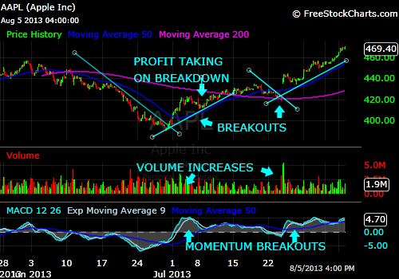
{kind=link}
Different opinions help a KISS trader
Markets are made because people have different opinions. This is how it should be. If everyone thought the same way, believed the same things - there would be no markets. For example, in the futures markets (basically a zero sum game - but not quite), for every buyer there is a seller. This means that KISS traders are trading their beliefs against the beliefs of those who disagree with them. They know that, as KISS traders, their beliefs are correct if their position is making money.
What is correct? Who is correct? The answer is simple. The markets are correct. If KISS traders are underwater in their positions and in the hold and hope mode, they are not listening to the markets.
The answer is simple for a KISS trader
A KISS trader learns to respond, rather than react. If price is going up, it is going up and that is that. Go with it and continue with it until it stops going up. If price is going down, go with it until it stops going down, according to the direction of the adopted trading strategy - such as put options.
Conclusion
A professional trader is constantly learning and testing new trading techniques. A good lesson is that the more sophisticated the techniques, the worse the results may be. Using complex fundamental analysis, quantitative algorithms, and many varying technical indicators all at once in their trading methods usually ends with the same result - losing money!
This is where KISS traders usually have the advantage and the most profitable trades, as they have the ability to spot the simplest trades.
Momentum Traders
To understand the meaning and functionality of momentum traders it is necessary to know what “momentum” actually implies and its interpretation in regard to trading.
Definition of momentum
The Webster’s Dictionary defines momentum as…..
“the strength or force gained by motion or through the development of events.”
Definition of momentum traders
These traders are looking for acceleration in a stock's price, earnings, or revenues. The traders will then often take a long or short position in the stock with the hope that its momentum will continue in either an upward or downward direction. This strategy relies more on short-term movements in price rather than fundamental particulars of companies, and is not recommended for novices.
Therefore momentum traders trade stocks that are moving significantly in one direction on high volume. The length of time for which momentum traders hold their position in a trade depends on how quickly the stock is moving.
Momentum traders are truly a unique group of individuals. Unlike other traders or analysts who dissect a company's financial statements or chart patterns, a momentum trader is only concerned with stocks in the news. These stocks will be the high percentage and volume movers of the day.
Do not confuse momentum stock trading with trend trading, which is more commonly practiced.
Requirements for successful momentum traders
To be a successful momentum trader, you must have the mental focus to remain steadfast when things are going your way and to wait when targets are yet to be reached. Momentum trading requires a massive display of discipline. This makes short-term momentum trading one of the more difficult means of making a profit.
Momentum trading is performed as a day-trading function and can happen relatively fast; therefore time and timing is extremely important.
Successful momentum traders require a special combination of both technical and fundamental (event-based) analysis.
- Technicals-based momentum trader
Technicals-based momentum traders make trading decisions based on their perception that the market is higher or lower than expected.
Technical analysis is the prediction by a momentum trader of a certain financial instrument being temporarily:
- higher than it should be, in which case the momentum trader can make money by shorting now and buying later; or
- lower than it should be, in which case the momentum trader can make money by buying now and shorting later.
{kind=link}
- Event-based (fundamental) momentum traders
An event-based or fundamental-based momentum trader makes trading decisions based on market volatility resulting from news or incidents happening in the course of a trading day.
When the news breaks out, the market will usually become very volatile. The markets for affected stocks and other financial instruments generally swing a lot, starting the moment the news comes out and potentially lasting for a few hours. During this time, momentum traders try to make money making very rapid trades based on the values of those financial instruments fluctuating wildly. A delay of seconds to minutes, as is common in traditional online trading, would therefore not be acceptable to such traders.
Remember: Stocks do not trade on technical analysis and business fundamentals alone. Financial worries, dreams, greed and fear are often the driving factors in investing. Momentum trading strategies attempt to flush out the stocks that are moving because of these factors.
Momentum trading strategy
Momentum trading is more than identifying which way a stock is trending; it is a trading strategy that focuses on stocks or other trading instruments that are showing a strong move in a particular direction, usually on high volume, within a specified time period.
The core strategy of momentum investing is to buy stocks that have been trending in one particular direction, frequently taking the form of buying a new high. Momentum investors aim to capture the waves of enthusiasm that can send stocks blasting higher for extended periods of time.
Momentum trading techniques
- Daily "stock watch list" - Momentum traders will typically have a daily "stock watch list" and stay in tune with daily news via television, message boards and websites.
- Volume as an indicator - The momentum trader uses volume as a primary indicator. When a stock becomes popular for whatever reason, and there are more buyers than sellers, the stock price tends to rise, also increasing trading activity.
- Testing resistance levels - After that, momentum traders look for a stock that is testing its resistance levels. If a stock is just making a lot of sound and fury, signifying nothing, a momentum trader will look elsewhere. Once a stock breaks a resistance level - either up or down - it comes into play for a momentum opportunity.
- Technical indicators - Momentum trading seeks out technical indicators of a resistance break. Many stock trading software programs show these trend lines for you automatically. Momentum traders do not attempt to buy at bottoms and sell at the top - rather, they jump on a price trend after a stock has clearly breached a resistance point and then either sell or short the stock when they have locked in sufficient profits. The greater the volume of trades in a stock, the less probability that the price momentum will reverse and a loss will occur.
- Cutting losses short and letting profits run - The chief challenge in momentum trading comes down to knowing when to cut losses. Traders really seek to eke out small profits in percentage terms on a daily basis. If a trade starts to reverse, the short time horizon of the strategy makes it so that it's more sensible to exit a position once it starts going negative in order to limit losses over the long term. Luckily, resistance breaks with high volume; so long as momentum traders gets into the trade before the saturation point, they are generally relatively safe trading plays in most markets. When there is a change in price movement, the trader needs to have a pre-established strategy that leads to a quick exit from the stock position. However, once the trend establishes in the other direction the trader can trade the stock again. Trading momentum stocks works in both directions.
Traders don’t make money-picking pairs, but rather by cutting losses short and letting profits run. And more importantly, they meet investment objectives through the judicious use of position sizing.
- Conservatism is the key - Getting in and out of the trade before the saturation point arrives is a significant challenge. The saturation point is the point at which buy or sell orders start significantly to outnumber those on the opposite side of the trade. Naturally, this point can be difficult to predict, and it's somewhere between luck and art for a trader to consistently avoid being caught in a saturated price movement. Conservatism helps momentum traders to avoid this more often. It helps to have a ballpark estimate of acceptable gains and allowable losses target for every trade to prevent emotional reasoning from interfering with trading efficiency.
- Trading times - Momentum traders will limit the times they trade to the first and last hour of the day trading session. This is due to the increased volatility that takes place during these two time slots. The most dangerous time zone for momentum traders is during lunch (12 - 2pm), when volume dries up and the moves are choppy to flat. Many seasoned momentum traders have learned to respect this time zone as a result of a trading blunder.
- Closing out trades - All positions, even the bad ones, must be closed by the end of the day. Failing to close positions at the end of the day and allowing them to "ride" overnight can make them susceptible to many external and uncontrollable factors, including very different trading patterns the next day.
- Discipline - Momentum trading is a strategy that requires an extraordinary amount of discipline. Successful traders can really only afford to pay attention to one or two stocks at once, as they need to be able to react to changes in the market with lightening rapidity. Many traders need to use margin in order to make significant profits, which magnifies the risks and increases the importance of stop-loss orders and other protective trading methods. Momentum trading falls somewhere between technical analysis trading and trend following as it relies on skills developed by both strategies.
Determining the momentum of the market
One method that momentum traders will use to tell if the market is offering nice pullbacks or when it will trade off of momentum is by checking the Average Directional Index (ADX) indicator.
- Readings below 25 indicate that the market will offer nice pullbacks to initiate swing trades.
- Readings above 25 indicate a strong trend - pullbacks will be shallow or nonexistent.
{kind=link}
As long as the ADX indicator is above 25 and sloping up, the market will continue to trade off of momentum. Momentum is lost when it begins to slope down.
There is no such thing as a perfect technical indicator, but the ADX does a good job of telling the momentum trader the current strength of the trend being encountered.
Trading momentum stocks
Trading momentum stocks works for the basic reason that well-performing stocks tend to continue to outperform the rest of the stock market. Theorists argue as to whether this phenomenon is due to irrational investor behavior or whether these stocks are of better-managed companies. For the trader or investor trading momentum stocks, the theory does not matter. What matters is having an efficient system of stock market analysis for recognizing and trading stocks that seem to have momentum.
Trading momentum stocks involves generating software trade signals by following current market calculations, moving averages and channel breakouts to understand market direction. Because traders do not care what the underlying reason is for the stock price movement, they need to have a predetermined set of rules for exiting a trade if the market reverses.
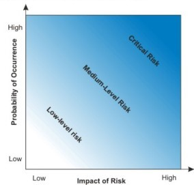{kind=link}
High probability with low risk
When momentum trading is executed properly with a tried and tested trading plan and proper risk control, it displays a trading method that is often referred to as High probability trading.
Momentum trading can be very profitable when risk is handled properly. Stop loss orders should be highly considered to manage risk as part of a successful momentum trading plan.
Pitfalls of momentum trading
There are several situations that a momentum trader needs to aware of:
- jumping into a position too soon, before a momentum move is confirmed
- closing the position too late, after saturation has been reached
- failing to keep eyes on the screen, missing changing trends, reversals or signs of news that take the market by surprise
- keeping a position open overnight. Stocks are particularly susceptible to external factors occurring after the close of that day's trading - these factors could cause radically different prices and patterns the next day
- failing to act quickly to close a bad position, thereby riding the momentum train the wrong way down the tracks
Because of these pitfalls, momentum trading is fraught with peril that can easily destroy even the most disciplined and knowledgeable trader; however, this style also offers the most potential for significant profit since there is rarely any factor inside or outside the market that drives a stock as powerfully as momentum. With a proper understanding of the technique, sufficient knowledge of the risks, and willingness to take an occasional loss, momentum trading offers an appealing choice for the aspiring trader who enjoys living on the edge.
Conclusion
Momentum trading is a short-term trading strategy that looks to profit from high-volume moves in a certain stock's price. So momentum traders look for breakout points in a stock price and then follow them with their trades either on the up or down side, looking to accrue profits from mass movements in stock price. Most traders close out of their positions by the end of the day, as they make extensive use of margin to finance their gains.
Momentum trading of stocks is for the intermediate or advanced trader. Momentum trading of stocks is a spur of the moment trading strategy. Utilize trading tactics to project market inertia and weigh the momentum of the trade. Remember, you need to have an understanding of the stock market before proceeding to learn momentum trading.
Range-bound Traders - Break-out Traders - Channel Traders
Introduction
The following traders - Range-bound Traders, Channel Traders and Breakout Traders - are linked in many ways, either in their trading strategies, styles, formats, or disciplines, as well as the fact that they rely on the trade being harnessed between two fairly recognizable lines. Obviously the breakout trader is looking for the moment that these lines are broken.
A. Range-bound traders
Range-bound traders use a purely technical method of predicting a stock's short-term highs and lows. Obviously, this type of trader is more active in range-bound markets, where they trade stocks within a defined channel.
A range-bound market is observed as a trading strategy that identifies stocks trading in channels. By finding major support and resistance levels with technical analysis, a range-bound trader buys stocks at the lower level of support (bottom of the channel) and sells them near resistance (top of the channel).
The trader looks for stocks with a clear support and resistance level - see "Strategies for a Range-bound Market" below. The trader then buys at the support and sells at the resistance. The simplest way for the trader to create a channel is to connect a number of high chart points as well as a number of low chart points. The resulting channel is the range within which the trader operates.
Example of range-bound trading with Google Inc. (Nasdaq: GOOG)
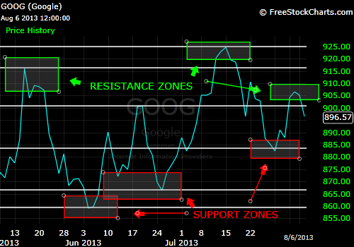{kind=link}
Trading range-bound stock can be a great short-term money making opportunity by shorting and going long within the range.
The trader may repeat the process of buying at support and selling at resistance many times until the stock breaks out of the channel. The upper boundary of the channel is shown by a trend line that connects the points representing a stock's highs over a given time period. The lower boundary of the channel is identified by connecting the points representing a stock's lows.
The downside of this strategy is that when a stock breaks out of the channel, it usually experiences a large price movement in the direction of the breakout. If the breakout direction is not favorable for the trader's position, bad losses can occur.
There are three types of channeling stocks or rolling stocks, some might say:
1. Ascending - Stocks bounce up and down the channel in an uptrend.
2. Descending - Stocks bounce up and down the channel in a downtrend.
3. Horizontal - Stocks bounce up and down support and resistance levels in a horizontal trading range.
Strategies for trading range-bound stocks:
1. Go long just above the high of the first bar, when stocks bounce up from support line.
2. Go short just below the low of the first bar when stocks bounce down from resistance line.
3. Go long when stocks breakout of the channel to the upside.
4. Go short when stocks breakout of the channel to the downside.
5. Look for obvious points of support and resistance where buyers stepped in to move the stock back up and where sellers stepped in to drive the price back down. Once those two points are established, there is a high probability that the points will be held again in the future.
6. This range-bound movement - also known as channeling - will eventually break but there are usually two or three good trades before that happens.
7. The range-bound movement usually occurs at the end of a large move as the bulls and the bears fight over the direction of the next move. The range can revolve around past gap support or gap resistance, moves from above to below major moving averages.
A range-bound market offers various opportunities to profit in this market. In this example, the trader is able to use the zigzag motion to their advantage, by simply identifying major support and resistance levels, and then buying at the support level and selling at the resistance. There are various technical indicators that can help determine times of entry and exit points - like stochastics and relative strength index - that indicate overbought and oversold areas. A range-bound trader can use these areas to trade stocks that move within a range.
{kind=link}
Besides buying and selling stock, other trading strategies a range-bound trader can use are spread betting, CFD (contract for difference) trading and options trading, to name a few.
A range-bound trader's strategy requires fairly constant monitoring of the stock, because a stock that breaks out of a range may make a dramatic and sudden price move.
Strategies for a range-bound trader
In the range-bound market, stocks spend as much as an estimated 80% of the time doing very little. And that means most of the time, investment money is just sitting there, trapped between short-term support and resistance.
In a range-bound market, support is the price level at which demand is thought to be strong enough to prevent the price from declining further. The logic dictates that as the price declines towards support and gets cheaper, buyers become more inclined to buy, and sellers become less inclined to sell. By the time the price reaches the support level, it is believed that demand will overcome supply and prevent the price from falling below support. If a stock's price falls below current support, it may signal a declining trend to a lower trading range.
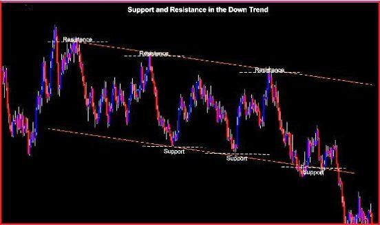{kind=link}
Recognition of key support and resistance levels is essential for successful technical analysis. Although it is sometimes difficult to establish exact support and resistance levels, being aware of their existence can greatly improve analysis and forecasting power. Channeling or trading ranges plays an important role in determining support and resistance as turning points or as continuation patterns.
“Discipline never goes out of style.”
B. Channel Traders
Channel trading is a powerful yet often overlooked form of trading that capitalizes on the tendencies of markets to trend. It is the technical range between support and resistance levels that a stock price has traded in for a specific period of time.
The channel trader combines several forms of technical analysis that provide precise points from which to buy and sell, put stop-loss and take-profit levels, etc., to take advantage of the trending market.
Channel Characteristics
In the context of technical analysis, a channel is defined as the area between two parallel trend lines and is often taken as a measure of a trading range.
A trading channel is created by charting the price of an asset, such as stock or commodity futures. Two parallel trend lines are drawn on the chart between the asset’s support and resistance. The upper trend line links price highs or closes. The lower trend line links the price lows or closes. The area located within the two lines is known as the trading channel. The price remains within this defined space until a channel breakout, or price breakout, occurs in either direction. The trading channel gives traders a visual look at the trading range of an asset for a certain time period.
An example of a channel is shown below. Breakout points in channels indicate bullish (on upward trends) or bearish (on downward trends) signals.
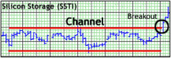{kind=link}
Note:
1. Channels are useful for short-to medium-term trading - not long-term trading or investing. The technique often works best on stocks with a medium amount of volatility. Remember, the volatility determines the profit per trade. Channeling also tends to work best when the technique is combined with other forms of technical analysis.
2. A breakout of a technical channel is seen as a bullish (on an upward breakout) or bearish (on a downward breakout) signal.
Trading Channels
Once a price channel has been identified, identifying areas to trade becomes a very straightforward proposition. Trading pricing channels is much like trading a range by pinpointing areas of support and resistance for out entries.
Typically, channel traders will sell an asset when the price approaches the top, which is the resistance level. Conversely, traders will buy an asset when the value gets close to the bottom. This is the support line. Many channel traders consider the trading channel to be a very reliable technical analysis tool for defining trend behavior. The trend lines are actually an aggregate of traders’ belief about the value of the asset. Trading channels illustrate the boundaries of this changing sentiment as values back away from resistance and springs off of support.
In a descending pricing, channel traders will look to sell the market on a test of resistance. Traders will look to sell in this gradual downtrend and take advantage or price reaching to lower lows. It’s important to understand that trading channels is ultimately a support and resistance strategy. That means that traders will wait for their opportunity to enter the market and not trade when prices reside between these levels.
Example of a channel trade - Whitecap Resources Inc. (TSX: WCP)
Whitecap Resources was trading in a steady bullish channel as of August 7, 2013 and represents a favorable opinion that there will be a continuation of this trend.
Target Price: C$12.68
Potential Profit: 13.22% (based on an entry price of C$11.20)
Stop Loss: C$10.72
The company’s fundamentals are still strong. Sales are estimated to be up +48.7% for one year. Analysts from Thomson Reuters consensus have made a large upwards revision of their EPS estimates. The last EPS was at C$0.45.
From a technical viewpoint, the security is trading in a bullish trend on all time scales. Increasing moving averages would make it unlikely that there will be a reversal in the coming trading sessions. The 20-day moving average should help to reach the C$11.20 long-term resistance quite soon. Above this threshold, a buyer enthusiasm would occur to lead the security towards the upper limit of the bullish channel.
Thanks to these good indicators, it seems relevant to take a long position in Whitecap Resources on crossing the C$11.20 resistance. The target price is the C$12.50. A stop loss will be set under the C$10.80 short-term support because a breakdown of this level would damage the technical pattern.
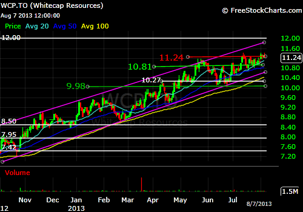
{kind=link}
Variations of channels
There are a variety of trading channels, such as horizontal or sideways channels, which can be found in markets that are trending up or down. These types of channel are not necessarily an indication that the prevailing trend is changing, but is indicative of a market that is in a resting or consolidation phase. This often occurs before the market makes its next move. Usually, the price breakout happens in the direction of the prior trend. To create a horizontal channel, draw a straight trend line that touches the most recent price high and a straight line that touches the asset’s price valley during the same time period.
There is not an existing rule or predetermined number of times that a price must meet the channel lines before traders should make buy or sell decisions. However, most traders look for at least two high points and two low points to validate a particular formation. Regardless of the trend, it is essential that both the trend and channel lines are drawn parallel to each other. Drawing the lines at the wrong angle will yield false conclusions. Traders typically anticipate where prices will go by computing the distance between the lines.
Exiting positions
Regardless of your trading strategy, traders should always have a plan to exit the market. One of the benefits of channel trading is that stop and limit levels are built around the previously defined levels of support and resistance. In a downward sloping channel, stops should always be placed above a level of resistance. In the event that price begins printing higher highs, traders will want to exit positions to sell the position as quickly as possible.
Profit targets will be set using the support line of the pricing channel. Traders will extrapolate this value by extending the line on the graph. Traders will want to exit positions with a limit order, when price touches this area of support. If the channel is to continue, price may bounce back to resistance at this point, continuing the descending charting pattern.
C: Breakout traders
Breakout traders are looking for strong stocks. They buy when a stock has just broken out and follows it up because breakouts on high volume are normally a strong buy signal, especially in bull markets. These traders can sometimes find stocks that move astonishing amounts in short periods of time.
These breakout traders often have their own sets of rules to help determine if a breakout trade is a false signal or a great buy. They may decide to add fundamental analysis or other indicators to help weed out breakouts that produce false signals.
Typically, the signals for breakout trades occur when volatility increases with prices rising above (or falling below) their historical ranges. Using proper money management techniques, breakout traders are able to limit risk and capture significant price moves before most of the rest of the market traders are even aware of the newly developing trend.
Definition of a breakout trade
A breakout is what occurs when stock prices (or prices for any other asset class) exceed previously determined support or resistance levels. Long positions are triggered when prices move above resistance, while short positions are signaled when prices drop below a clearly defined level of support. Since these breaks are uncommon (and usually unexpected) other market traders are typically caught off-guard by the price activity and, as a result, volatility will generally increase. Another reason for this increase is that traders with range-trading strategies often have stop losses just outside of the commonly defined range, and when the break out triggers these stop losses, prices have the potential to gain momentum in the direction of the break.
A typical example of this type of action can be seen on the chart below of Priceline.com Inc. (Nasdaq: PCLN).
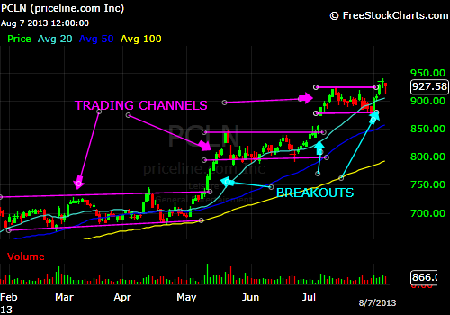{kind=link}
It should be noted that breakouts can occur on any time frame, but those seen on the longer term charts tend to create more significant changes in momentum and volatility (which suggests a higher level of forecasting ability and successful trading). The same rules apply on any chart time frame, but breakouts seen on a daily or monthly basis generally have a higher probability of showing a true change in underlying trends (which suggests a higher level of validity in the breakout price movement).
Breakout trading strategies
A breakout is a stock price that moves outside a defined support or resistance level with increased volume. A breakout trader enters a long position after the stock price breaks above resistance or enters a short position after the stock breaks below support. Once the stock trades beyond the price barrier, volatility tends to increase and prices usually trend in the breakout's direction.
The reason breakouts are such an important trading strategy is that these setups are the starting point for future volatility increases and large price swings. In many circumstances, breakouts are the starting point for major price trends.
When trading breakouts, it is important for the breakout trader to consider the underlying stock's support and resistance levels. The more times a stock price has touched these areas, the more valid these levels are and the more important they become. At the same time, the longer these support and resistance levels have been in play, the better the outcome when the stock price finally breaks out.
Typically, the most explosive price movements are a result of horizontal channeling. In this type of channel, support and resistance level is more evident to traders. With this breakout strategy, breakout traders are tested in the fact that they have placed their limit orders above the line of resistance or below the line of support. When price breaks through this level, limit orders are automatically filled. This results in increasing volume.
Methods employed to find breakouts
Breakout traders scan for stocks that have the following setups:
- Bollinger Band width index of three or less, preferably less with a candlestick count of 20 or more, preferably more.
- It should have low volume indicating the "calm before the storm." The ones where volume has clearly fallen off are the ones that have the most potential to "explode."
- The five, 10- and 20-day EMAs have truly converged.
- Defined support and resistance.
- By using a technical indicator called ADX, (average directional movement) and looking for periods where the ADX has breached below a threshold level.
- A relatively narrow trading range over X units of time is apparent - for example, a program might scan for when the seven-period range is low relative to recent seven-period ranges.
- Have identified a sequence of bars (three or more) where the market closes within a prior bar’s range.
When these areas are recognized it is important that the breakout trader has precise protocol for identifying a signal and entering the market, and then managing the trade. All too often, traders believe that just understanding a setup will allow them to trade it profitably. This is false!
Breakout traders use price resistance lines in their charting. Price resistance is one of the best types of resistance lines because it carries a psychology behind it.
The psychology behind price resistance definitely helps breakout traders to make more profit from their trades.
When a stock is on the way up, there are always people buying shares, and all the way into the top. Once the selling starts (because the people at the bottom are taking profits) it leaves the traders who bought at the top holding their shares. These traders are called bag holders, and it is never a good idea to be a bag holder.
The biggest problem for traders is taking a loss. Instead of selling out for a small loss, these traders will hold onto their shares and trade with “hope."
First, they hope to get out with a profit, but once the selling picks up, they will just hope to get out at break-even. When the stock begins to make another run, all these bag holders are waiting to get out at break-even.
When all these traders dump their shares around the highs, it creates a price resistance at that level. When the majority of bag holders have dumped their shares, a break of this resistance level is seen and breakout traders can now return to buying the stock.
Example: In this chart of Amgen (Nasdaq: AMGN), it is obvious that it has been making a big run during July. It stalled out for most of the preceding week, but then made a big move again and is set up for a breakout.
As you notice through the chart, people were buying Amgen as it ran from $90 to $112. The people who bought in the $100 territory quickly realized that they were buying at the top as Amgen began to sell off. When the stock hit $109.68 again, it stopped, and price resistance was formed.
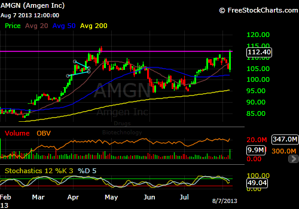{kind=link}
How do we make money from this?
Breakouts are best played close to the price resistance line, in this case $109.68, barring the last day of $112.40. Traders want to buy this stock at $109.70 because this keeps the risk lower on the trade. The target should be the next resistance line up at $115, which is good for 4.5%.
Conclusion
The key to successful breakout trading is seeing a follow-through (or a continuation) of price activity in the direction of the break (a break of resistance for a long trade, a break of support for a short trade). Without this momentum, prices will reverse and stop breakout traders out of their position.
Options Traders
An options trader is anyone who buys and sells options in the capital market.
An options trader is anyone who buys and sells options in the capital market. As options trading is most commonly conducted through online option trading brokers, it is also commonly known as online options trading or online option trading. Option trading and stock trading are different on many levels.
Option trading and stock trading is different on many levels. Stock traders gain when the stock goes up, and lose when it goes down. It's that simple.
However, options traders (call and put premium buyers) not only need to pick the right direction of the stock, but the stock's move must happen in a certain amount of time (before the expiry date). Furthermore, there is a premium built in - the implied volatility (IV) - which tells us how much other call and put traders expect that stock to move. Therefore, not only do these speculators need the underlying to move in the right direction and within a certain time frame, but also by more than other players are predicting.
There are many advantages to options trading as an investment strategy but one of the main advantages is that trading options requires you to commit less capital to an investment than a stock or other type of market trade requires. By using an option you can make as much or more profit as with other types of trades. This can mean more money in your pocket for a smaller investment as can be realized in the example below.
An Example of an options trade - LinkedIn Corporation (Nasdaq: LNKD)
LinkedIn is the number one job search company, as it has become the go-to gold standard for job seekers and employers - which in turn has helped it double since its IPO two years ago.
On May 2, 2013, LNKD reached a peak of $201.67 and the next day fell back to $175.59. LNKD became range-bound, until signs indicated that there would be breakout occurring, therefore on June 21, 2013, the following options trade was executed.
OPTION TRADE: Buy the LNKD August 08, 2013 200.000 call (LNKD130808C00200000) at or under $4.00, good for the day. Place a protective stop limit at $1.60 and a pre-determined sell at $8.00.
{kind=link}
By early July the trade had come to fruition. If it continued to be held, as of August 8, 2013, this trade could have been sold for $32.90 - a profit of 800%. However, greed can also cause a loss - therefore, 100% profit is better than nothing.
Reasons to trade stock options
In a volatile stock market, or even in a market that is flowing quietly and calmly, there are many reasons to trade stock options. The “flash-crash” markets, the volatility, the unexpected economic news reports and continuous data, the bull-runs, can all be beneficial to options traders if they so desire it.
By using options trading, options traders can avoid the stock market frustrations and actually set themselves up to make money. Options traders use strategies designed to extract money from the market, regardless of direction, or even if there is no direction, by using options.
Options traders can benefit greatly from their trades. For example:
- They can purchase a stock option for a fraction of the cost of buying the underlying stock, which means they can start trading stock options with a much smaller amount of money.
- They can make money when they trade stock options in any type of market - whether it is up, down or sideways - year-in year-out. Even if a stock they have purchased options on goes in a direction opposite to their views, then money can still be made with correct manipulation.
- They can profit in all market environments by trading multiple option strategies on highly liquid exchange-traded funds on broad-market indexes, like the QQQ.
- Their profit potential could be unlimited, depending on their trading outlook on the scale from conservatism to greed.
- They can profit from the strong tendency of the market to trade in well-defined ranges most of the time with a carefully selected option premium selling program.
- They can profit from the huge volatility around events like quarterly earnings reports.
- They can profit by buying call options on stocks that are in up trends, at much lower dollar risk than buying the stock.
- They can profit from market volatility regardless of the direction of the price movement.
- They can profit from buying calls on stocks that outperform, and at the same time buying puts on stocks that underperform their industry peers.
- Huge leveraged gains by buying options during expiration week, when premiums are extremely low. And now, with the new weekly options, there is an expiration week every week.
Their risk could be limited to the small amount they invest. The amount per investment needs to be considered, before the outlay, according to their risk scale and the amount of capital available.
They are able to still profit when they trade stock options in spite of interest rate fluctuations, inflation, deflation, or any political considerations, or even because of these factors. The more volatile a stock becomes, the larger the profit that can be expected from this options investment.
There are many advantages to options trading as an investment strategy. For one, it allows the options trader to commit less capital to an investment than would be required by a stock or other type of market trade. Even so, they can make as much or more profit as with other types of trades. This can mean more money in their pocket for a smaller investment.
Some of the other benefits that options traders have over other forms of trading are as follows:
- Leverage - The use of various strategies to maximize potential profit. Leverage is created by making the options trader’s investments work harder for them. In other words, leveraging is creating potential for bigger gains using a smaller amount of capital.
- Hedging - Traders can also completely hedge long-term stock positions at a low cost. In options trading, hedging means they can establish a position in one market (in this case options), to offset an exposure to price fluctuations in some opposite position in another market (here this means shares). This has the goal of minimizing their exposure to unwanted risk. Options are a perfect tool for protecting a stock portfolio. A trader can buy options on their stocks like buying insurance for a car. For a small amount of money they can buy options against a longer-term trade or investment and fully protect that trade or investment from market volatility (dramatic ups and downs).
- Trading up, down and sideways - Options give the trader plenty of extra scope to make leveraged bets on the direction of a stock; whether they believe the stock will go up, down, or move very little in any direction. This means that they can make money on stocks even when they are not making money.
- Less in commissions - This depends greatly on which brokerage the options trader uses. Online brokerages offer discounts on options as there is a great deal of competition. This helps to keep options trading costs low. Commissions on options are very open- there are no hidden costs. The commissions are a lot less than those charged for trading stock.
- Risk is limited - Options allow the trader to create trading strategies with limited risk of loss, but with high probabilities of success. They have complete control over the exposure to risk.
- Any movement can be good - An options trader does not need to be ‘bullish’ all the time. Options trading allows traders to establish positions that earn them money when the market moves up, down, or trades in a range. Owning shares only allows investors to profit when stocks move higher.
- Income - By selling someone else the right to buy their stock at a predetermined price, the trader is paid a premium that they can consider to be a special dividend through an option.
- Indexing - If an options trader wishes to trade a diversified portfolio rather than just shares, there are options available on all the major indexes e.g. S&P 500, DJIA (Dow Jones Industrial Average), Russell 2000, etc.
- Opportunity - Options are available in a wide range of instruments, such as agricultural products, metals, foreign currencies, interest rates, soft commodities, index products, energy products, etc. This leaves a wide scope for options trading opportunities at almost any time.
- Liquidity - Transactions can be executed quickly and easily, so the trader’s money is not tied up for a long time as it is in trading shares. The options trader can re-invest many times over in the same time that stock traders might, who only trades once with shares. This means many more chances to make a profit!
- Price availability - Options prices are readily available from a wide range of sources, particularly from the Internet. This makes it easy for traders to monitor market movement, find the best entry and exit points, and determine future positions.
Conclusion
Options are one of the most versatile trading instruments ever invented. They provide a high-leverage approach to trading that can significantly limit the overall risk of a trade, especially when combined with stock or futures. As a result, understanding how to develop profitable strategies using options can be extremely rewarding. The key when an options trader trades stock options is to develop an appreciation about how this investment vehicle works, what risks are involved, and the vast reward potential that can be unleashed with well-conceived and time-tested trading strategies.
The great thing about (stock) options is that once again the options trader will totally control their downside risk. So, even when they experience a losing trade, their loss will be strictly limited. They will draw the line on losses, in advance. It's a necessary built-in strategy in trading stock options.
Options Seller Traders
In contrast to buying options, an options seller trader sells stock options. This comes with an obligation to sell the underlying equity to a buyer if that buyer decides to exercise the option and the trader is "assigned" the exercise obligation. "Selling" options is often referred to as "writing" options.
When options seller traders sell (or "writes") a Call- they are selling a buyer the right to purchase stock from them at a specified strike price for a specific period of time, regardless of how high the market price of the stock may climb.
There are two styles or methods of writing options:
Covered Calls - The option sellers own the underlying stock that the option is derived from. In a covered call, they are selling the right to buy an equity that they own.
With covered call options they already own the stock, hence the term "covered." They need to own at least 100 shares of stock to sell a covered call, because 1 stock option equals, represents, or controls 100 shares of stock.
If buyers decide to exercise their option to buy the underlying equity, the options seller trader is obligated to sell to them at the strike price - whether the strike price is higher or lower than their original cost of the equity. Sometimes an investor may buy an equity and simultaneously sell (or write) a call on the equity. This is referred to as a "buy-write."
Example: If options seller traders buy 100 shares of an ETF (exchange-traded fund) at $20, and immediately write one covered call option at a strike price of $25 for a premium of $2, they immediately take in $200 - the premium.
There are generally three things that can happen now that the options seller has sold this covered call:
- The option the traders sold will expire worthless, which just means that the person never exercised their right to buy the stock. In most cases, this is what they want to happen because they would have made some easy money.
So, if the ETF's market price stays under $25, then the buyer’s option will expire worthless, and they have gained the $200 premium.
- The options seller trader is "called out." This is the term they use when the buyer of the option decides to exercise their rights and buys the stock. Since the options seller sold the covered call option, they are obligated to deliver those shares to the buyer.
In this instance, the ETF's price rises above $25, which means that the options seller may have to sell their ETF and will lose its upside appreciation above $25 per share.
- The stock price drops dramatically and the options sellers start to panic because they can't sell the shares. Once they sell a covered call, those shares are now obligated. The options seller can't do anything with those shares as long as that covered call is still an open trade. One way out of this situation is to buy the option back, which then frees up those shares and at this point the trader could sell the stock.
This means that the options seller can close out the position by buying an option on the same ETF with the same strike price and expiration in a closing transaction to at least partially reduce a potential loss.
Naked or Uncovered Calls - The option seller does not own the underlying stock that the option is derived from. They would be selling the rights to something that they don't own. Naked option selling has significant risk and is not recommended for novice traders.
Options sellers who engage in naked option selling often utilize a strategy using “options greeks.” Selling naked stock options is the riskiest, but also the most profitable form of option selling. In theory, they just sit back and sell stock options and collect money month in and month out. They never have to worry about tying up a lot of cash to buy the stock.
Example: An options seller trader writes a Call on a stock for a premium of $2, with a current market price of $20, and a strike price of $25. Again, they immediately take in $200 - the premium.
- If the stock price stays under $25, then the buyer’s option expires worthless, and the seller has gained $200 premium.
- If the stock price rises to $30 and the option is exercised, they will have to buy 100 shares of the stock at the $30 market price to meet their obligation to sell it at $25. They lose $300 - the difference between their total $3,000 purchase cost for the stock, minus their proceeds of $2,500 from the sale of exercised stock and the $200 premium they took in for selling the option.
As this example demonstrates, uncovered Call writing carries substantial risk if the equity’s price increases sharply.
Selling put options
Obviously, if options seller traders sell calls, they would also be in the market for selling puts. Put option writers, also known as sellers, sell put options with the hope that they expire worthless so that they can pocket the premiums. Selling puts, or put writing, involves more risk but can be profitable if done properly.
- Covered Puts - The written put option is covered if the put option seller is also short the obligated quantity of the underlying security. The covered put writing strategy is employed when the investor is bearish on the underlying. ·
- Naked Puts - The short put is naked if the put option seller did not short the obligated quantity of the underlying security when the put option is sold. The naked put writing strategy is used when the investor is bullish on the underlying. For the patient investor who is bullish on a particular company for the long haul, writing naked puts can also be a great strategy to acquire stocks at a discount.
Rules for selling
Selling options is best done when implied volatilities, and therefore option premiums, are high and expected to fall. This is because higher implied volatility brings in more premium income to the trader’s account. It is important to remember, however, that selling options involves considerable risk, and high implied volatility can always go higher.
As we already know, time decay is greatest in the last 30 to 45 days; this is typically the best time to sell options. It is ideal for the options seller trader to have the options expire worthless, and in most cases the trader is not interested in buying back the options they have sold, unless necessary.
Day Traders
Introduction
Day traders enter into and exit positions several times per day. The critical feature is that they never hold a position “overnight.”
A more appropriate term for traders executing multiple trades per day is “intra-day trader.”
Then there is the ultimate form of day traders called “intra-day scalp traders” who execute a particularly short-term form of day trading. This type of trading has elevated risk but has the potential for extraordinary return on investment (ROI). Intra-day scalp trading is generally based on technical analysis of indicators such as moving averages, moving average convergence divergence (MACD), momentum oscillators, Fibonacci sequences, etc. Trades are often held only for minutes at a time, and sometimes even shorter than that.
Definition of day traders
Day traders are investors who generally buy and sell the same stock in the same day. This type of trading is not limited to just buying stocks; day traders may also buy and sell stock options, currencies, or a whole range of futures. Typically day traders may hold a stock for a matter of seconds or minutes; additionally they may buy and sell the same stock several times during the course of a day.
A day trade, by definition, is a trade that is opened and closed on the same day.
Therefore, day traders tend to be out of the market (sell all of their stocks) before the trading day ends to avoid any possible after market gap downs (a situation where a stock may open the next day at a lower point than it closed the previous day). They avoid the risks of long-term buy and hold.
There are two main types of day traders: institutional and retail. Both institutional and retail day traders are described as speculators, as opposed to investors.
- Institutional day traders work for financial institutions and have certain advantages over retail traders due to their access to more resources, tools, equipment, large amounts of capital and leverage, large availability of fresh fund inflows to trade continuously on the markets, dedicated and direct lines to data centers and exchanges, expensive and high-end trading and analytical software, support teams to help and more. These advantages give them certain edges over retail day traders.
- Retail day traders work for themselves or in partnership with a few other traders. Retail traders generally trade with their own capital, though they may also trade with other people's money. Laws may restrict the amount of other people's money a retail trader can manage. In the United States, day traders may not advertise as advisors or financial managers. Although not required, nearly all retail day traders use direct access brokers as they offer the fastest order entry to the exchanges, as well as superior software trading platforms.
Day trading requires a significant amount of time. Generally people who day trade are doing this for a living, spending their entire day at the computer buying and selling stocks. This type of strategy for stock market trading is only effective for day traders, who apply analysis rather than emotion to trading decisions.
Advantages and disadvantages of day trading
A day trader’s objective is to make profits by taking advantage of small price movements in highly liquid stocks or indexes. A more volatile market presents more favorable conditions for the day trader, regardless of the longer-term direction or the trend in the market. Unlike some fund managers and investors, who hold positions over longer periods of time and are averse to selling equities short, the day trader is not committed to a position and can adapt to whatever condition the market is in at any given moment.
An Example of day trading using breakouts - Green Mountain Coffee Roasters, Inc. (Nasdaq: GMCR)
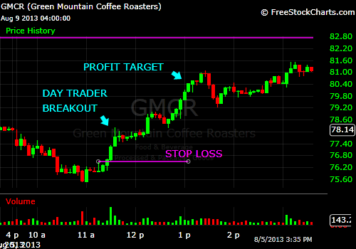
{kind=link}
An Example of day traders’ breakout rules:
- Stock gaps up or down on high volume.
- Wait for a trading range to develop - set time limits.
- Buy or sell short the breakout of the morning range either high/low.
- Have a predetermined profit target for the position. The profit target should be in alignment with the volatility of the stock.
- Have a stop loss order - such as a maximum stop of 2% - and look to exit trades if they are not profitable once a certain time is reached.
A day trader who wants to achieve success needs appropriate knowledge, equipment, tools and markets together with the ability to trade the right electronic trading platform.
Also, a successful day trader needs to know which stocks to trade, when to enter the trade, and when to get out of the trade. Part of this knowledge is how to find those stocks with liquidity and volatility, in order to generate profits.
Pattern Day Traders
If a day trader makes four or more day trades in a rolling five business day period, the account will be labeled immediately as a Pattern Day Trade account. Certain limitations will then be applied based on the account equity. (Account equity is the amount of cash that would exist if every position in the account were closed. This is also known as the liquidation value.)
A pattern day trader is one who trades the same security four or more times per day (buys and sells) over a five-day period, and for whom same-day trades make up at least 6% of their activity for that period. According to the rule, traders are required to keep a minimum of $25,000 in their accounts and will be denied access to the markets should the balance fall below that level. There are also restrictions on the dollar amount that they can trade each day. If they go over the limit, they will get a margin call that must be met within three to five days. Further, any deposits that they make to cover a margin call have to stay in the account for at least two days.
The pattern day trader rules were adopted in 2001 to address day trading and margin accounts. The U.S. Securities and Exchange Commission (SEC) rules took effect February 27, 2001 and were based on changes proposed by the New York Stock Exchange (NYSE), the National Association of Securities Dealers (NASD), and the Financial Industry Regulation Authority (FINRA). The changes increased the margin requirements for day traders and defined a new term, “pattern day trader.” The rules were an amendment to existing NYSE Rule 431, which had failed to establish margin requirements for day traders.
Benefits for pattern day traders
If the pattern day trader can maintain the minimum balance requirement of $25,000, there are certain benefits for this type of account. Increased access to margin - and therefore increased leverage - can be one of them.
For non-pattern day trade accounts with standard access to margin, traders may hold positions in value up to twice the amount of cash in their account. For example if the account has $30,000 in cash, the trader can buy up to $60,000 worth of stock. The trader uses the $30,000 and the brokerage firm lends the trader the remaining $30,000 on margin and charges interest on the loan.
Pattern day trade accounts will have access to approximately twice the standard margin amount when trading stocks. This is known as Day Trading Buying Power and the amount is determined at the beginning of each trading day. When trading stock, Day Trading Buying Power is four times the cash value instead of the normal margin amount cited above. So in the previous example, the trader would be able to trade up to $120,000 worth of stock.
Leverage and margin are trading tools and are meant to be used wisely. Financially speaking, leverage is when a small amount of capital is able to control a much more expensive asset or group of assets.
When trading and investing, leverage has the ability to magnify the skill set of the trader. If the trader is adept and able to profit while trading, leverage (margin) may help the trader to make profits faster and/or in larger quantities.
Caution for pattern day traders
If traders are not proficient, losses will rack up more quickly and in larger amounts when using margin.
When a trader day trades with borrowed funds (margin/day trading buying power) it is possible to lose more than the initial investment. A decline in the value of stock purchased may cause the brokerage firm to require additional capital to maintain the position. Absence of an immediate additional capital infusion may cause the broker to liquidate client positions at its discretion.
Intra-Day Traders
The name “intra-day trader” refers to a stock trader who opens and closes a position in a security in the same trading day. This can be buying and selling to capitalize on a potential rise in a security's value or shorting and covering the short to capitalize on a potential drop in value. Intra-day traders capitalize on small moves in the value of a security by using "leverage" or "margin", which basically means borrowing money.
Day traders and intra-day traders are at the top of the risk spectrum. They participate in rapidly changing market conditions, looking for quickly developing profit opportunities. Mostly these traders employ technical analysis to determine when conditions are right to enter either long or short, and then to exit (hopefully with a profit).
With the elevated risk comes the potential for extraordinary ROI (Return on Investment).
Intra-day traders are mostly full time traders and it is imperative that they dedicate themselves to the task during whatever market hours they trade. This usually requires the trader to dedicate themselves to continuous monitoring of one or (preferably) several screens of data in order to identify the most favorable market conditions and moments to enter and exit trades. Many intra-day traders have developed automated systems. They simply start their trading programs and let the computer do its job.
Determining where to enter trades is one of the primary challenges facing intra-day traders. By analyzing specific price-volatility patterns and the previous day’s price action, traders can better determine when trade entries are most likely to be followed by strong breakout moves. Developing the skills to quickly recognize patterns based on “price elasticity,” trading range, and cup depth can help them focus on these opportunities.
Rules employed by intra-day traders
Many intra-day traders follow certain guidelines to limit losses. They:
- Invest what they can afford to lose - Intra-day trading carries more risk than investing in stocks and an unexpected movement can wipe out their entire investment in a few minutes.
- Choose highly liquid shares - Intra-day traders must square their positions at the end of the trading session.
- Trade only in two or three scrips at a time - There is a need to closely monitor the stock movements.
- Research watch list thoroughly.
- Fix entry price and target levels - The psychology of the buyer changes after they have bought a stock, which could interfere with their judgment and nudge them into selling too quickly even if the price moves up marginally.
- Use stop losses to contain impact - This helps the trader limit losses in case the share belies expectations and moves down (or up).
- Are not investors - Shares are bought with an ultra short-term horizon.
- Book profits when targets are met - Greed and fear are the two biggest hurdles for the intra-day trader.
- Don't fight the market trend - Even the most sophisticated analysis cannot predict which way the market will move.
- Remember small is beautiful - While stock investments can yield stupendous returns, be content with small gains from intra-day trading.
Because intra-day traders close out their positions in the stocks they own at the end of the day, whether winning or losing, some of the risks are limited. There is no hangover. Each day is a new day, and nothing can happen overnight to disturb an existing profit position.
Intra-Day Scalp Traders
Intra-day scalp traders undertake one of the most challenging styles of trading to master. It requires unbelievable discipline and trading focus.
Intra-day scalp trading is a particularly short-term form of day trading as scalpers seek to lower risk exposure by lowering their time in the market. Scalping usually yields the smallest gains per successful trade. It is generally based on technical analysis of indicators such as moving averages, MACD (Moving Average Convergence Divergence), momentum oscillators, Fibonacci sequences, etc. Trades are often held only for minutes at a time, and sometimes even shorter than that.
Traders are attracted to scalp trading for the following reasons:
- Less exposure to risk
- They can place up to a hundred trades or more per day
- Ability to fight the greed, since their profit targets are very small
- Greater number of trading opportunities
Benefits of being an intra-day scalp trader
- Positions are typically only held for short periods of time, allowing less chance for reversals to knock out the scalper’s trading position. This also means less need for patience and having to wait for a trade to close.
- Scalpers typically take profits at 1:1 risk to reward or less, allowing their strategies to achieve a higher strike rate, rather than a high reward rate.
- Because the position is typically held for a short period of time, there is also less knowledge of the market, and trading strategies needed, as long-term analysis is not as useful. Trends, pivot point, Fibonacci, and the like are fairly irrelevant.
Problems encountered by intra-day scalp traders
- Not all brokers allow for scalping on their platforms.
- Since good trades typically yield only 1:1 risk to reward or less, one loss can deplete the gains of several successful trades.
- Since the pip (performance index paper) yields are often 5 pips or less, they may have to make many trades, even dozens in one day to accomplish their financial goals.
An example of an intra-day scalping trade - Pandora Media Inc. (NYSE: P)
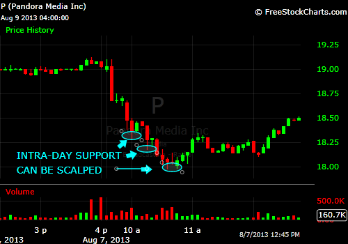{kind=link}
Intra-day scalp traders must deal with two trends and this makes this type of trading a much more skillful endeavor. Scalpers must watch and know the daily chart trend plus the trend of the intra-day time frame they may be using to find support or resistance.
The day trader should know that a bounce is very likely at strong intra-day support levels despite the intra-day trend being down, as long as the daily chart trend is up. A scalp trader can buy the strong intra-day support level for the small bounce. Scalpers will only be looking to take a small profit on the trade. Once they are in the money on the trade, they move their stop loss to break even to protect against a loss. They need a great deal of discipline so that greed does not enter the equation when trading unless they are in the money and have already secured a gain.
Winning is critical
Unlike a number of other day trading strategies where they can have a win/loss ratio of less than 50% and still make money, intra-day scalp traders must have a high win/loss ratio. This is due to the fact that losing and winning trades are generally equal in size. The necessity of being right, is the primary reason scalp trading is such a challenging method of making money in the market.
Stock Traders’ vs. Stock Investors' Roles in the Marketplace
Many people use the words "trading" and "investing" interchangeably when, in reality, they are two very different activities. While traders and investors participate in the same marketplace, they perform two very different tasks using very different strategies. Both of these parties are necessary, however, for the market to function smoothly.
Stock traders: Individuals or entities engaging in the trading of equity securities, or the transfer of financial assets in any financial market, either for themselves, or on behalf of someone else. They operate in the capacity of agent, hedger, arbitrageur, speculator or investor.
Stock investors: Individuals or entities who use their own money to purchase equity securities, which offer potential profitable returns in the form of interest, income or appreciation in value (capital gains).
There is quite a variation of characteristics. To go into further detail on investors and traders:
Stock investors
Stock investors are the market participants whom the general public most often associates with the stock market. They rely primarily on fundamental analysis for their investment decisions and fully recognize stock shares as part ownership in the company. Many investors believe in the buy and hold strategy, which, as the name suggests, implies that investors will buy stock ownership in a corporation and hold onto those stocks for the very long term, generally measured in years.
These investors, who purchase shares of a company for the long term with the belief that the company has strong future prospects, typically concern themselves with two things:
- Value - Investors must consider whether a company's shares represent a good value. For example, if two similar companies are trading at different earnings multiples, the lower one might be the better value because it suggests that the investor will need to pay less for $1 of earnings when investing in Company A, relative to what would be needed to gain exposure to $1 of earnings in Company B.
- Success - Investors must measure the company's future success by looking at its financial strength and evaluating its future cash flows.
Both of these factors can be determined through the analysis of the company's financial statements along with a look at industry trends. At a basic level, investors can measure the current value of a company relative to its future growth possibilities by looking at metrics such as the PEG ratio - that is, their price earnings (value) to growth (success) ratio.
Stock traders
Stock traders are market participants, either an individual or firm, who purchase shares in a company with a focus on the market itself rather than the company's fundamentals. A stock trader usually tries to profit from short-term price volatility with trades lasting anywhere from several seconds to several weeks. The stock trader is usually a professional. Persons can call themselves full- or part-time stock traders/investors while maintaining other professions.
Markets involved in the trade of commodities are beneficial to a stock trader’s strategy. After all, very few people purchase wheat because of its fundamental quality - they do so to take advantage of small price movements that occur as a result of supply and demand. Stock traders typically concern themselves with:
- Price patterns - Stock traders will look at past price history in an attempt to predict future price movements. This is known as technical analysis.
- Supply and demand - Traders keep close watch on their trades intra-day to see where money is moving and why.
- Market emotion - Traders play on the fears of investors through techniques like fading, where they will bet against the crowd after a large move takes place.
- Trader support - Market makers (one of the largest types of traders) are actually hired to provide liquidity through rapid trading.
Ultimately, it is traders who provide the liquidity for investors and always take the other end of their trades. Whether it is through market making or fading, traders are a necessary part of the marketplace.
Clearly, both traders and investors are necessary in order for a market to function properly. Without traders, investors would have no liquidity through which to buy and sell shares. Without investors, traders would have no basis from which to buy and sell. Combined, the two groups form the financial markets as we know them today.
Contrarian Traders
Contrarian trading is an investment style that goes against prevailing market trends by buying assets that are performing poorly and then selling when they perform well.
A contrarian trader believes that the people who say the market is going up do so only when they are fully invested and have no further purchasing power. At this point, the market is at a peak. On the other hand, when people predict a downturn, they have already sold out, at which point the market can only go up.
Contrarian investors tend to use various sentiment indicators and particularly those that emphasize out-of-favor securities with low P/E ratios.
Put simply - if you follow the herd, you will be led to the slaughterhouse. Contrarians get excited when an otherwise good company has a sharp, but undeserved drop in share price. They swim against the current, and assume the market is usually wrong at both its extreme lows and highs. The more prices swing, the more misguided they believe the rest of the market to be.
The basics of the contrarian trading strategy
The contrarian trader’s strategy is not as simple as taking the opposite side of the public's widely held viewpoint - “the trend is your friend” theme. A stock that goes higher and higher for an extended amount of time will naturally gain a lot of positive sentiment - this does not mean that a contrarian investor immediately hates that stock. Going against the price trend is always a tough way to play. The approach is to look for stocks where the sentiment is counter to the established trend. In other words, the contrarian looks for stocks going higher despite a significant amount of pessimism.
The reason behind this strategy is that the pessimism indicates a lot of investors have been avoiding that stock, and are therefore sitting on the sidelines. If that stock continues higher, then at some point, the sentiment will change and that sideline money will (hopefully, all at once) begin to flow into that stock, thereby driving it higher in a short amount of time. The fast and furious rally is especially beneficial to those that are contrarian options traders.
Indicators for the contrarian investor
Contrarian traders constantly monitor the markets and read about stocks, which provides a feel for the sentiment. It also helps to be able to quantify sentiment, and this can be done in a few different ways:
For more on indicators that contrarians monitor, check out Why is the disparity index indicator important to contrarian investors?
- Analyst ratings, for example, are pretty straightforward. Analysts give a buy/hold/sell recommendation on stocks, depending on what they think investors should do. If a stock is trekking higher, but has little to no "buy" recommendations, then the potential is there for upgrades --which can influence those on the sidelines to buy the stock.
- Shorting a stock or buying put options are two ways for investors to profit when a stock falls in price. Therefore, monitoring the changes in short interest and the amount of put buying are ways to quantify negative sentiment on a stock. If there's a large amount of these negative bets being placed on the stock, while it's still moving higher and higher, then a contrarian trader can assume that there is significant sideline money that can still be deployed to keep the rally going.
The pendulum for success
There is a tendency for investors to succumb to short-termism and act on their emotions rather than reason.
The pendulum of investment emotions continually swings back and forth between fear and greed, and many of these sentiment indicators are designed with the goal of capturing emotion extremes.
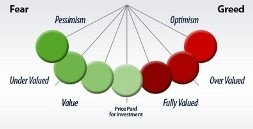{kind=link}
The concept of mass hysteria is nothing new.
Baron Rothschild, an 18th century British nobleman and member of the Rothschild banking family, is credited with saying that, "The time to buy is when there's blood in the streets."
He should know. Rothschild made a fortune buying in the panic that followed the Battle of Waterloo against Napoleon. But that's not the whole story. The original quote is believed to be, "Buy when there's blood in the streets, even if the blood is your own."
This is contrarian investing at its heart - the strongly-held belief that the worse things seem in the market, the better the opportunities are for profit.
Some contrarian sentiment indicators
- Sentiment surveys - Such as the American Association of Individual Investors weekly survey and the Advisors Sentiment Index, conducted by Investors Intelligence.
- Put-Call Ratio - This is a widely used ratio that measures the trading volume of bearish put options to bullish call options and is used to gauge the overall mood of the market.
- Volatility Index (VIX) - The VIX indicator or “Fear Gauge” calculates inputs from various call and put options to create an approximation of the S&P 500 index implied volatility for the next 30 days.
- Strategist sentiment indicators
- Short interest - The higher the amount of shares shorted, the larger the pent-up demand to buy shares becomes in the future.
- Fund flow data - The direction of investment dollars flowing in and out of mutual funds can provide some perspective on the psychology of the masses.
- The trader’s reaction - actions speak much louder than words. Indicators based on opinions, surveys, and technical analysis data can be very subjective, therefore concentration should be centered on those indicators explaining actual measurable investor behavior (i.e., Put-Call, VIX, Short Interest, Fund Flow, and other action-oriented trading metrics).
An example of a contrarian trade -- Zynga Inc. (Nasdaq: ZNGA)
Zynga Negatives
Zynga stock fell 12% from August 2012 to August 2013, experienced some wild price swings in 2013, had a late-July 2013 slide on the heels of a management shake-up which sent the stock tumbling below its 10-day moving average, and, in August 2013 the equity ran into technical resistance at its 200-day moving average. Also, analysts at Stifel Nicolaus lowered their earnings estimates for Zynga Inc. to show the weakening fundamentals of the online social gaming company based on its performance in the first half of the 2013 fiscal year.
Contrarian Positives
However, from a contrarian trader’s point of view, Zynga presented a definite message that the stock will double in the following 12 months past August 2013, as it had positive points, such as:
- A Groupon-like turnaround feel,
- Hired an 8-year veteran from Microsoft
- Had 65% of market cap in cash as of August 2013
{kind=link}
Can contrarian traders be successful?
The short answer is yes, but it requires an understanding of three things:
- that opinion and action are two different things,
- that trends are where the money is, and
- that price confirmation is needed for any reversal.
Contrarian traders must realize that there can and should be a difference between opinion and action and this leads to a varying of opinions relating to the outcome of sentiment indicators. If the market is rising and they feel it will eventually collapse, they don't need to act on that opinion right now. Opinion can be separated from what is currently going on - this will allow them to profit by trading with the market right now, instead of believing their opinion should be right at this time.
Opinion and emotion can wreak havoc on trading profitability, especially when traders develop very strong opinions or emotions. This is where it becomes imperative to design a trading plan before they start trading.
Risks of contrarian trading
There are risks to contrarian investing. While the most famous contrarian investors have put big money on the line, swam against the current of common opinion and came out on top, they also did some serious research to ensure that the crowd was indeed wrong and probably studied a great deal of sentiment indicators. So, when a stock takes a nosedive, this doesn't prompt a contrarian trader to put in an immediate buy order, but to find out what has driven the stock down, and whether the drop in price is justified.
Active and Passive Traders
Introduction
The difference between active and passive trading is like the difference between the actions of one individual versus the actions of a group as a whole; an alternative way of thinking about active trading is like trying to bet on who will win the Super Bowl, while passive trading would be the ability to profit as all the NFL teams collectively made money on ticket and merchandise sales. Each strategy has certain advantages.
Each strategy has certain advantages. In passive investing, a lot of return can be collected after significant time if stock takes a favorable course. But for volatile stocks that are not expected to necessarily rise greatly over months or years to come, short term transactions that exemplify the active investing style can make the most of the market.
A: Active traders
Active traders sometimes border on the fanatic. They read everything on investing, study the stocks, and subscribe to magazines, associations, or newsletters. Their motivation can be to flip stocks and make money fast, or it can be the satisfaction of finding a treasure missed by Wall Street pundits. Whether driven by wealth or ego, this type of investor turns investing into their hobby and even passion.
These investors learn how to read financial statements, market predictions, economic analysis reports, and editorials. They learn the names of the world's best economists, and are familiar with the London and New York Times Newspapers.
An active trader buys and sells stocks with the intention of making money in the short term. Active traders typically don’t hold individual stocks for many months or years, and generally do not focus upon long-term economic trends.
Also, an active trader who seeks to buy and sell the same stock shares during a single day often fits the definition of a “day trader”.
Being labeled as an active trader under the definition of “day trading” is defined by three main characteristics:
- Time frame - Very short ,usually within a trading day.
- Purpose - Active traders attempt to profit from the daily price fluctuation of a particular stock. They rely on technical analysis rather than fundamental analysis for predicting these price fluctuations.
- Volume - Active traders make multiple trades throughout the trading day. In addition, active traders usually scale out of positions, meaning they sell portions of their investment throughout the trading day.
Day traders have the potential to make (or lose) money quickly, but must devote much more time to trading than most long-term investors do.
Active traders prefer stocks that are rising and promise to be a forerunner for future outperformance. They have one focus, accelerating earnings, such as from a company which has tapped into a new product or innovation that promises to hit the market hard. There are many approaches to picking stocks, based on a number of factors including stock price behavior, markets, and earnings growth.
Active traders aren’t involved in trading to earn money from corporate dividends. They also do not usually purchase preferred stock, which offers benefits that are oriented toward people who invest for the long-term.
Compared to other traders, somewhat different tax rules apply to active traders. Pages D-3/4 of the Schedule D instructions provides details on these differences, as well as additional information on how to determine the definition as an investor or trader.
B: Passive traders
This type of stock trader is often interested in investing their money, but they do not want to spend their weekends studying financial statements, markets, and even weather reports. This type of investor laughs at the good luck mantras and charms used by some investors. They are often happy to put their money in the hands of a broker and walk away.
The passive trader creates a plan, researches stocks, invests, and then patiently waits for a return in the future. A passive investor takes a look at the company's value, assets, debt, and financial health. They consider market and competition when estimating the company's opportunity for success. They are not aggressive, or looking for a quick gain.
As long as their losses are not in the high-risk level, they leave their portfolio alone. They follow the 10% rule when estimating acceptable loss. Once a stock falls 10% below what they paid, it is time to sell to the bargain hunters.
Passive trading
Passive trading relies on the fact that over time the market has always gone up. If a trader is not passionately interested in the stock market and they’re investing mainly for retirement, a passive strategy may be the best bet.
Passive trading can deliver a decent return in the long run with a minimum of involvement. Two things are critical to this strategy:
- Choosing stocks that have good potential to increase steadily in value over the term of the investment, and
- Selecting a diversified portfolio, to offset the unforeseen fate of one particular company or market sector. To achieve this they can consider hedging by adding instruments such as bonds, which tend to go up in value when stocks are going down.
Passive investing advantages
The main advantage of this strategy is that, when properly employed, it can bring in a lot of profit, rather than a series of small, short-term profits garnered by the active investing approach. For instance, at a time when the auto industry has been greatly suffering, passive traders may buy a significant amount of shares of a car company that they thinks will rebound, and wait years for the industry to improve, and the company stock to increase by, say, three times. If the trader avoids short-term trades that may mean selling at small increases, more money can be made in the long term if stock steadily climbs.
Conclusion
Although passive traders regard short-term fluctuations in stock prices as minor compared to long-term growth, they still can't just pick a portfolio and forget about it.
Often, passive traders do not even monitor stock. One good reason for this is that checking in regularly could reveal enticing short term values that might cause traders to abandon their strategy and settle for short term gains rather than the expected, more favorable long term gains that may result from successful passive investing. However, even passive traders should re-evaluate the performance of their stocks periodically and respond to long-term market changes.
Futures Traders
Futures are financial contracts giving the buyer an obligation to purchase an asset (and the seller an obligation to sell an asset) at a set price at a future point in time. Futures are also called futures contracts.
There are four main types of futures traders in the futures market, creating the liquid futures trading environment that we see today. No matter what a trader chooses to do in futures trading, they will inevitably fall into one or more of these types. The four types of futures traders are really classified based on the purpose of their trades rather than the actual trading strategy itself, as the same futures strategy can be applied for various purposes. They are:
- Hedgers: Hedgers do with futures contracts what futures contracts were initially designed to do when they were first developed along the rivers of Chicago, which is to hedge against price risk. A trader is a hedger when they go short on futures contracts while owning the underlying asset or other futures contracts of the same or related underlying in order to protect their existing positions against price fluctuations.
- Speculators: Speculators form the backbone of the futures trading market we see today. They provide liquidity and activity in the futures trading market through their day trading or swing trading strategies, buying and selling futures contracts outright in order to speculate on a strong directional move. This is also the most dangerous way of trading futures, as the price of the underlying asset could just as easily come around and put your position in a loss deep enough for a margin call.
- Arbitrageurs: Arbitrageurs are futures traders that are in the market in order to spot price anomalies between futures contracts and their underlying assets in order to reap a risk free return. Arbitrage is another huge source of volume and liquidity in the market as it typically takes an extremely big fund and big trading volume in order to return a worthwhile profit in arbitrage. Arbitrage is such a competitive area right now that super computers with powerful programs to spot such opportunities are set to perform such arbitrage automatically.
- Spreaders: Spreaders are futures traders that specialize in trading futures contracts in combination with other futures contracts or underlying assets in order to reduce risk and to extend profitability. Such complex futures positions are known as "Futures Spreads" or "Futures Strategies." This is a very professional and highly specialized field that has only recently been made known to the general public and makes use of the difference in price and rate of change in price of different offsetting futures contracts in order to create futures positions that move within certain limits and have a much higher chance of profit with a lot lower commissions.
Examples of futures at work
The assets often traded in futures contracts include commodities, stocks, and bonds. Grain, precious metals, electricity, oil, beef, orange juice and natural gas are traditional examples of commodities, but foreign currencies, emissions credits, bandwidth and certain financial instruments are also part of today's commodity markets. Two types of futures traders’ response to these assets are:
- Hedgers do not usually seek a profit by trading commodities, but rather seek to stabilize the revenues or costs of their business operations. Their gains or losses are usually offset to some degree by a corresponding loss or gain in the market for the underlying physical commodity.
- Speculators are usually not interested in taking possession of the underlying assets. They essentially place bets on the future prices of certain commodities. Thus, if they disagree with the consensus that wheat prices are going to fall, they might buy a futures contract. If their prediction is right and wheat prices increase, they could make money by selling the futures contract (which is now worth a lot more) before it expires (this prevents them from having to take delivery of the wheat as well). Speculators are often blamed for big price swings, but they also provide liquidity to the futures market.
Futures contracts are standardized, meaning that they specify the underlying commodity's quality, quantity, and delivery so that the prices mean the same thing to everyone in the market. For example, each kind of crude oil (light sweet crude, for example) must meet the same quality specifications so that light sweet crude from one producer is no different from another and the buyer of light sweet crude futures knows exactly what they are getting.
Conclusion
Futures trading is a zero-sum game; that is, if somebody makes a million dollars, somebody else loses a million dollars. Because futures contracts can be purchased on margin, meaning that the investor can buy a contract with a partial loan from his or her broker, futures traders have an incredible amount of leverage with which to trade thousands or millions of dollars’ worth of contracts with very little of their own money.
Forex Traders
A foreign exchange or Forex trader, also referred to as a retail Forex trader, is a person that seeks to obtain profit through buying and selling various currencies on the foreign exchange market. Traders employ a number of techniques, including spot trades and forward options, and make use of various software programs to increase their chances of successful trading.
Forex trading
Foreign currency exchange, or Forex, is the largest financial market in the world. It is sometimes also referred to as the FX market. Traders speculate on the values of currencies, and they profit from accurate predictions in exchange rates. The Forex market has many characteristics that differentiate it from the trading process of other markets. But ultimately, the Forex market is a volatile, auction-based system not unlike the stock market and other financial markets. Risks remain high.
The amount traded on Forex exceeds all the world's equity markets combined. Due to the evolution of the Internet based trading platforms, this market is no longer exclusively available to investment professionals and continues to expand rapidly.
Also, due to the time differences around the world, Forex trading takes place continuously because as one market closes another one opens.
Retail Forex traders
The retail Forex trading industry is growing everyday with the advent of Forex trading platforms and their ease of accessibility on the Internet. Retail Forex traders access the market indirectly either through a broker or a bank. There are two main types of retail Forex brokers that provide traders with the ability to speculate on the currency market:
- Brokers work as an agent for the trader by trying to find the best price in the market and executing on behalf of the customer. For this, they charge a commission on top of the price obtained in the market.
- Dealers are also called market makers because they ‘make the market’ for the trader and act as the counter-party to their transactions, they quote a price they are willing to deal at and are compensated through the spread, which is the difference between the buy and sell price.
Advantages of trading the Forex market
- Forex is the largest market in the world, with daily volumes exceeding $3 trillion per day. This means dense liquidity which makes it easy to get in and out of positions.
- Trade whenever a trader wants: There is no opening bell in the Forex market. A trader can enter or exit a trade whenever they want from Sunday around 5pm EST to Friday around 4pm EST.
- Ease of access: A trader can fund their trading account with as little as $250 at many retail brokers and begin trading the same day in some cases. Straight through order execution allows them to trade at the click of a mouse.
- Fewer currency pairs to focus on, instead of getting lost trying to analyze thousands of stocks.
- Freedom to trade anywhere in the world with the only requirements being a laptop and Internet connection.
- Commission-free trading with many retail market-makers and overall lower transaction costs than stocks and commodities.
- Volatility allows traders to profit in any market condition and provides for high-probability weekly trading opportunities. Also, there is no structural market bias like the long bias of the stock market, so traders have equal opportunity to profit in rising or falling markets.
Conclusion
While the Forex market is clearly a great market to trade, it is important to remember that trading carries both the potential for reward and risk. Many people come into the markets thinking only about the reward and ignoring the risks involved, this is the fastest way to lose all of their trading account money.
Online Stock Traders
Online stock traders place buy/sell orders for financial securities and/or currencies with the use of a brokerage's Internet-based proprietary trading platforms. The use of online trading increased dramatically in the mid to late 1990s with the introduction of affordable high-speed computers and Internet connections.
Stocks, bonds, options, futures and currencies can all be traded online.
Another benefit to online traders is the improvement in the speed of which transactions can be executed and settled, because there is no need for paper-based documents to be copied, they are filed and entered into an electronic format.
Online trading
Online trading, also known as electronic trading (or sometimes etrading), is a method of trading securities (such as stocks and bonds), foreign exchange or financial derivatives electronically. Information technology is used to bring together buyers and sellers through an electronic trading platform and network to create virtual market places such as NASDAQ, NYSE Arca and Globex, which are also known as electronic communication networks (ECNs).
Online trading is in contrast to older floor trading and phone trading and has a number of advantages, but glitches and cancelled trades do still occur.
While the majority of retail trading in the United States happens over the Internet, retail trading volumes are dwarfed by institutional, inter-dealer and exchange trading. However, in developing economies, especially in Asia, retail trading constitutes a significant portion of overall trading volume.
Becoming an online stock trader
Online trading has given anyone who has a computer, enough money to open an account and a reasonably good financial history the ability to invest in the market. They don't have to have a personal broker or a disposable fortune to do it, and most analysts agree that average people trading stock is no longer a sign of impending doom.
The market has become more accessible, but that doesn't mean that an online trader should take online trading lightly.
After choosing a stock broker, and before beginning to buy investments such as stocks, bonds, mutual funds, or exchange traded funds there are twelve main types of trades that can be placed, that need to be understood so that big (and potentially expensive) mistakes are not made. These are:-
- Market Orders - A market order is the simplest type of stock trade you can place. It means that if a trader wants to buy or sell 100 shares of a stock, for instance, it will get transmitted to the exchange and the order will be filled at the current price.
- Limit Orders -A limit order lets a trader set a minimum or maximum price before their stock trade gets converted to a market order and sent to the stock exchange. Until a trader becomes very experienced, almost all orders should be limit orders to protect themselves.
- All-or-None Orders - An all-or-none stock trade allows the trader to tell their broker that they only want an order filled if they can buy, or sell, all of the shares they instructed them to trade. This is important for strategies such as selling covered calls.
- Stop Order and Stop Limit Orders - A sell stop order would allow an investor to avoid further losses or protect a profit if a stock drops below a certain level. The order then gets sent to the exchange and becomes a market order when triggered.
- Selling Short and Buy to Cover Orders - A short sell order means a trader tells their broker to sell shares of stock that they don't own. If the stock falls, they can close the transaction with a buy-to-close order, replacing the borrowed stock and pocketing the difference.
- Day and GTC Orders - When a trader is ready to trade stock, they can place either a day order, which will expire at the end of the trading day if it isn't filled, or a good-till-canceled order, which won't expire for up to sixty days, depending upon the broker.
- Extended hours trading - The extended hours market allows a trader to place trades between 8 pm and 8 am; times when the market is traditionally closed. This system permits investors to react to corporate announcements and news prior to the next session. There are a number of risks associated with extended hours orders; primarily an increase in volatility as a result of decreased liquidity. Any time there are fewer shares being traded, stock price movements become larger because buy and sell orders have a disproportional influence upon the quoted value. As a result, the price a trader pays for an extended hours’ trade can differ substantially from what they would pay (or receive) during regular market hours.
- Trailing Stop Orders - A trailing stop order can let a trader protect profits. As the stock price goes up, they can tell their broker to keep trailing it and only sell if it falls, say, $2 from its highest price ever. At that point, the order gets converted to a market order.
- Bracketed Orders - Bracketed orders may allow new investors to combine the best of both worlds. They can protect their profits, limit their losses, and structure their brokerage orders according to their own outlook for a stock or exchange traded funds.
This is achieved by "bracketing" an order with two opposite-side orders. A BUY order is bracketed by a high-side sell limit order and a low-side sell stop order. A SELL order is bracketed by a high-side buy stop order and a low-side buy limit order.
The order quantity for the high and low side bracket orders matches the original order quantity. By default, the bracket order is offset from the current price by 1.0. This offset amount can be changed on the order line for a specific order, or modified at the default level for an instrument, contract or strategy using the Order Presets.
An Example of a bracketed order
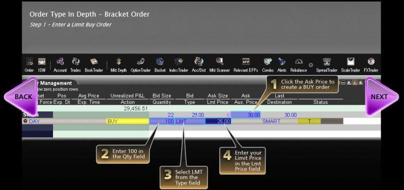{kind=link}
Bracket orders are an effective way to manage your risk and lock in a profit on an order that has yet to execute. In this example, you want to buy 100 shares of ABC stock, which has a current Ask price of $30.00. You expect the price to fall to $25.00, and then rise to $30.00.
By attaching a bracket order, you do not have to return to re-evaluate and manage the risk of a position if the Limit order to buy at $25.00 per share is executed.
You click the Ask price of ABC stock to create a Buy order, then enter the quantity and order type, then enter $25.00 as your Limit price. You do not transmit the order yet because you want to attach a Bracket order.
A bracket order is one of many ways to help protect your positions, particularly if you not able to watch your account all day.
Terms like "market order", "limit order", "trailing stop loss", and "bracket order" may sound complicated but in reality, they are simple concepts that an online trader can understand with just a little bit of work. It's best to think of them as tools in their stock-trading arsenal. For instance, if they want to put in an order that will keep following a stock price as it rises so they don't lose any upside, but sell their stake if the market starts to crash, they can do that. If they want to buy shares and put in an order at a predetermined amount below a specific price so they limit their losses, they can do that, too.
The impact of online stock traders
The increase of electronic trading has had some important implications:-
- Reduced cost of transactions - By automating as much of the process as possible (often referred to as "straight-through processing" or STP), costs are brought down.
- Greater liquidity - Electronic systems make it easier to allow different companies to trade with one another, no matter where they are located. This leads to greater liquidity (i.e. there are more buyers and sellers) which increases the efficiency of the markets.
- Greater competition - While electronic trading hasn't necessarily lowered the cost of entry to the financial services industry, it has removed barriers within the industry and had a globalization-style competition effect. For example, a trader can trade futures on Eurex, Globex or LIFFE at the click of a button - he or she doesn't need to go through a broker or pass orders to a trader on the exchange floor.
- Increased transparency - Electronic trading has meant that the markets are less opaque.
- Tighter spreads - The "spread" on an instrument is the difference between the best buying and selling prices being quoted; it represents the profit being made by the market makers.
Pivot Traders
Pivot traders basically say that the exact value (or price of a stock) at any given time is unknowable. You cannot say that your stock is worth $100 because there are too many variables to contend with. Pivot traders tend to believe that a stock moves between popular values for that stock based on past company performance.
Founded on the unknowable premise, a pivot trader tends to say a stock will trade to levels that it has traded in the past and then pivot - either turn around or "breakthrough" that support or resistance level.
So, pivot traders look at past performance as the best predictor of future performance.
The Pivot point system
The Pivot point system is a technique developed by floor traders to help ascertain where the price is, relative to previous market action. The Pivot point in a very basic sense can be defined as a turning point. It can be classified as a technical indicator derived by calculating the numerical average of the high, low and closing prices, of any financial instrument - currency pair, index or stock. These values are taken from the previous day’s trading range.
A cursory observation of any financial instrument reveals price always fluctuates between levels of support and resistance. Identifying key support and resistance levels can improve the trader’s ability to enter, exit, and manage trades.
The Pivot point is a level at which the sentiment of the market changes. It can be used to predict change in sentiment of traders and investors. The primary advantage of this technique is that it is price-based as opposed to indicator-based. Usually, by the time most indicators generate a signal the move is either completed or already well under way. With the Pivot point system it is possible to execute trades before the indicator-following traders enter the market.
A basic deduction is if the market breaks the Pivot level up then the sentiment is bullish and the market is likely to rise. Similarly, a break of pivot level down is considered bearish and price will continue downwards. Given that the Pivot point is considered a level of support or resistance, a re-test is to be expected. The Pivot point can thus be used as a predictive indicator. If the following day’s market price falls below the pivot point, it may be used as a new resistance level. Conversely, if the market price rises above the Pivot point, it may act as the new support level.
Why pivot trading works
The reason Pivot trading works is that numerous retail traders, investors, bank and institutional traders use and trust the system. It is common knowledge among the trading community that the Pivot point is an important measure of strength and weakness of any market. Floor traders and dealing desks have been applying the methodology for decades in the index, commodity and currency markets. But what separates the profitable traders from the losers is the simple act of following the trend of the day, cutting losses short and letting profits run to the next Pivot value. Pivot points work best on highly liquid markets, like the spot currency market, but they can be used in other markets as well.
Advantages of pivot trading
- Pivot points can be used for determining overall market trend. If the pivot point price is violated in an upward movement, then the market is bullish, and the converse is true. Pivot points are short-term trend indicators useful for only one day until they need to be recalculated. Thus, this condition is likely to sustain only until the next session. Long-term traders utilize weekly Pivot points.
- Pivot point price levels can be used to enter and exit the markets. A trader might put in a limit order to go long if the price breaks a resistance level and use a lower support level as a stop.
- The Pivot points clearly distinguish the support and resistance levels. Consider taking trades when price approaches the support or resistance area. If price is declining and approaching a stage of support level then consider a long trade if this support holds. Similarly, if price is moving higher towards the resistance level consider entering a short trade if this resistance holds.
The S1 support and R1 resistance levels are important. Simply look for reversal or break of R1 or S1. Consider exits rather than entries at extremes (S2, S3, R2 and R3). At these levels the market will already be overbought or oversold.
An Example of Pivot trading - A five-minute chart of the Nasdaq 100 ETF (Nasdaq: QQQ)
In addition to giving buy and sell signals, Pivot points give traders a good time indication as to when to get out of their trade. To illustrate, during a rally some traders will set their sell orders right below the next resistance line. Thus, Pivot point resistance and support lines can generate ready- made profit targets.
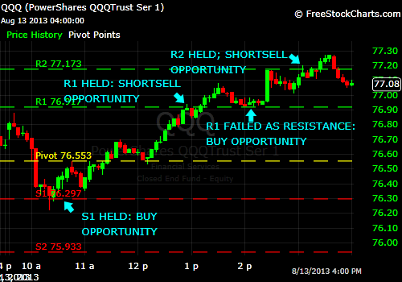{kind=link}
In the 5-minute chart of the Nasdaq 100 ETF above, the QQQs opened the day downward, but held steady at Support 1 (S1).
From there, the Nasdaq 100 ETF rallied past the Pivot Point, where it gained additional support. Eventually, the QQQs found resistance at Resistance 1 (R1).
Next, the QQQs meandered slightly above the Resistance Point R1 which then offered support, until finally, the QQQs accelerated past R2.
The rally continued slightly above R2, where the bulls were promptly rejected.
News Traders
Market news is the communication of selected information on current events which is presented by print, broadcast, Internet, or word of mouth to a third party or mass audience.
Trading the news is a technique to trade equities, currencies and other financial instruments on the financial markets. Therefore trading news releases provide a significant tool for news traders. Economic news reports often spur strong short-term moves in the markets, which may create trading opportunities for traders. A news trader is looking for announcements about corporate profits, a change in management, rumors of a merger, which are all events that can cause a company's share price to move wildly up or down. Interest rates, unemployment and export rates, or the central bank's policy shifts, can cause a major change of an exchange rate.
Etiquette of news reporting
News organizations are often expected to aim for objectivity; reporters claim to try to cover all sides of an issue without bias, as compared to commentators or analysts, who provide opinion or personal point-of-view.
Newsworthiness is defined as a subject having sufficient relevance to the public or a special audience to warrant press attention or coverage.
In some countries and at some points in history, what news media and the public have considered "newsworthy" has met different definitions, such as the notion of news values.
With the advent of the Digital Age everything we thought we once knew about journalism needs to be rethought. Today the work of journalism can be done from anywhere. It requires no more than a reporter and a laptop.
There are many considerations when market news is involved:
- The reader and writer interpretation,
- The distinction and reliability of tweet, blog post, newspaper story, magazine article, and book.
- Professional or amateur input to market news items and a variety of “pro-am” relationships which have emerged.
- The boundaries delineating for-profit, public, and non-profit media have become misconstrued at times, and the cooperation across these models of financing has developed badly.
- Within commercial news organizations, the line between the news room and the business office is questionable,
- The line between old media and new media has blurred, practically beyond recognition.
These alterations inevitably have fundamental ramifications for the contemporary ecology of news. The boundaries of journalism, which just a few years ago seemed relatively clear, and permanent, have become less distinct, while potentially the foundation of progress even as it is the source of risk, has given rise to a new set of journalistic principles and practices to survive the never-ending change encountered with modern technology!
It is indeed complex, but it seems to be the future.
News trading methodology
Trading decisions based on news developments are nothing new. Whether the market-moving news arrives by boat, carrier pigeon or Blackberry, traders have always been eager to be the first to exploit and act on information that may impact a given market.
Yet now news is only new for a fraction of a second. Algorithms and rules-based engines filter text as it appears online, identify its underlying meaning, assess its importance and then - when warranted - execute trades based on it. All this occurs in a matter of milliseconds - ideally, a thousandth or two of a second before competing traders' algorithms do so.
At the same time, the definition of market news as it applies to trading markets is changing as well. In the age of Facebook, Twitter and social networks, we are seeing many new and different kinds of data sources that can be analyzed and mined for tradable insights, which in turn can be turned into machine-readable text or numbers and assessed for value by trading algorithms.
News trader
From the development of news to market news, we have the emergence of the “news trader.”
A news trader is a trader or investor who makes trading or investing decisions based on market news announcements. Economic reports and other news can have a short-lived effect on particular markets. News traders try to profit by predicting how a market will respond to particular news.
The old saying “buy the rumor, sell the news” means that rumors have one effect on a particular trading instrument’s price movement, and news can have an opposite effect.
News traders rely on short-term reactions to market news to drive the market in a particular direction. News traders can look at historical data to predict how future news can affect prices. By becoming familiar with certain markets, news traders can make a guess as to whether a stock or other trading instrument will increase or decrease in price following a market news report. Often these price moves happen within an extremely short period of time following the news; therefore, news traders must be quick to respond if they hope to capture profits. This also means that a news trader must be one of the first to receive breaking market news.
Noise Traders
“Noise trader” is a financial term introduced by Albert Kyle (1985) and Fischer Black (1986). It refers to a stock trader who lacks access to inside information and makes irrational investment decisions (De Long et al., 1990)
A noise trader is a stock trader that does not have any specific information of the security. If the efficient market hypothesis holds, noise traders add liquidity to a market while not distorting valuations.
Therefore, the term noise trader is used to describe an investor who makes decisions regarding buy and sell trades without the use of fundamental data. These traders generally have poor timing, follow trends, and over-react to good and bad news.
A noise trader is somebody who practices noise trading, exclusively, continuously, and indiscriminately. Noise traders usually imitate other traders and follow the trends. When they see a price rise or fall, they jump aboard. They might even give less importance to information that is more fundamental but the potential effects of which take more time and efforts to analyze.
In fact, a market without noise traders will tend to break down, because prices in such a market will become fully revealing. Informed traders will not enter a market without noises, because it is impossible to profit from trading in a completely efficient market. Informed traders need the existence of noise traders to “hide” their trades and by trading on their private information, informed traders make profits. Through trading, informed traders gradually release relevant information to the market prices and together with the noise traders, they help bring the market back to equilibrium.
Noise trading
Noise trading is compulsive or hyperactive buying and selling activity or overtrading in financial markets, which is performed in the absence of meaningful new information, except erratic minor price moves, trifling or misunderstood news or unverifiable rumors.
Those frantic trader moves:
- are not only driven by market noises, as a flow of irrelevant information that does not really change the asset's fundamentals,
- but are also themselves a main source of market noise that initiates more erratic price moves unrelated to those fundamentals.
Noise trader risk
Noise traders create market anomalies and risks for other investors who base their valuations on fundamental analysis. The risk is that, although market prices differ from their "fundamental" valuations, the difference can get amplified instead of corrected.
The reason is that noise traders trust other traders' moves more than the fundamentals. Therefore they mimic those other players even when they are erring. They put themselves also in a risky position, as those other traders, also hyperactive, can change erratically their mood and behavior.
Different types of market noises
The rather meaningless market information, but which market traders are addicted to interpreting as decisive, usually takes the form of:
- Some minor "exogenous" information (anecdotal news, wrongly seen as changing the economic fundamentals),
- The "daily chatter" of financial media, bloggers, tip givers / sellers, and gossipers.
- Or most often minor vibrations / zigzags in market prices and volumes. They are random blips due mostly to noise traders who act erratically, upon whims more than rationality or upon relevant information.
Noise traders interpret those noises, even if produced by other noise traders,
- Sometimes as mispricing that offer arbitrage opportunities, in the hope that the price will swing back.
- More often as signals of either the birth of a short price trend or a confirmation of a long price trend.
- As opportunity to make money by following the scent.
- In terms of "representativeness heuristic” - seeing technical analysis configurations everywhere, as signs in the sky.
Conclusion
Noise traders spend time doing intra-day, or at least short term, buying and selling. This "overtrading" has several effects: -
- Its usefulness is to add liquidity to markets by boosting the transaction volume.
- In practice, it creates a quasi-continuous presence of counterparts for buy and sell orders.
- It brings a non-negligible source of fees for brokers.
- On the other hand, it is also a far from negligible source of costs for traders. This plays against the profitability of their trades and also, often, their survival as market players.
- It tends to bring market excesses into one area of the market or other - depending on the type of market information presented at the time - e.g. Rumor of war in oil-bearing countries will affect stock prices and volumes of oil companies on the stock market.
- Stock markets, and other financial markets, mostly when they are experiencing a bubble, have numerous noise traders that take the trend itself as a signal. Here noise trading and trend following go hand-in-hand.
Most noise traders believe they are making sound investment decisions when they follow market noise. Since the trades noise traders make are often not based on any fundamental data, they usually try to jump on the bandwagon and react quickly when they think noise is taking the market in a particular direction, and subsequently, they may make poor decisions by overreacting to good and bad news.
Since the noise traders are always watching the price movements of equities and listening to other aspects of noise in the market, their trades can often have a short-term effect on the market. This is because the constant buying and selling done by these traders causes an increase in price volatility. As the time horizon of an investment increases, however, the effect of noise trading becomes less and less noticeable.
Sentiment-Oriented Technical Traders
Sentiment-oriented technical traders trade in response to predictable price patterns (“judge market sentiment”) and are similar to front runners or even effectively act as dealers or order anticipators because they try to trade before other traders. If they offer liquidity to the uninformed traders they are essentially dealers. They therefore accelerate the impact that other traders will have on the price.
Since sentiment-oriented technical traders try to trade before uninformed traders, their trading tends to make prices more erratic - high or low - which then tends to misrepresent a true market price of the instrument in question. This is especially true when they trade into a rising asset bubble.
In many cases sentiment-oriented technical traders tend to decrease market liquidity as follow-on traders then tend to view the increase or decrease in a stock price with concern. Although sentiment-oriented technical traders sometimes improve prices, the additional transaction costs they impose on their victims more than offset the price improvements that they offer to the traders with whom they trade.
Sentiment-oriented technical trading
Sentiment-oriented technical trading can be quite risky because it involves front running uninformed traders. The impacts that uninformed traders have on prices often move prices away from their fundamental values. Such movements attract value traders to the other side of the market. If the value traders trade aggressively, sentiment-oriented technical traders will then lose. Therefore sentiment-oriented technical traders must know when to close their positions. If they hold their positions too long, they will lose when prices revert to fundamental values.
Since sentiment-oriented technical traders tend to lose to value traders, sentiment-oriented technical trading will be most profitable in instruments that are not easily valued. Value traders trade less aggressively in hard-to-value instruments than in instruments that they know well.
Perhaps the best examples of hard-to-value instruments are stocks in developing industries such as the Internet. Their values are hard to estimate because they depend on uncertain technologies and on the development of unknown markets. Since these stocks tend to attract many uninformed traders, sentiment-oriented technical traders may occasionally identify profitable trading opportunities in them. Also, the stocks and bonds of companies in emerging markets may provide such opportunities for similar reasons. - Larry Harris, Author of Trading and Exchanges: Market Microstructure for Practitioners.
Successful sentiment-oriented technical traders
Successful sentiment-oriented technical traders may trade successfully in instruments whose values depend on difficult-to-measure fundamental factors. The three most important factors are:
- Expected inflation
- Future political uncertainty
- The equity risk premium
Stock, bond and precious metal values depend crucially on these factors. Since these factors are very hard to measure, value traders do not know well the fundamental values of instruments whose values depend on them. Therefore, uninformed traders may significantly affect prices in these instruments. Traders who can predict what uninformed traders will do may therefore be able to trade these instruments profitably.
Intuitive Traders
While this category of investing is maybe not well recognized, many traders fit the pattern.
To understand what is meant by an intuitive trader it is important to first look at what intuition means.
Intuition in the context of decision-making is defined as a “non-sequential information-processing mode.” Therefore, intuitive decision-making can be described as the process by which information acquired through associated learning and stored in long-term memory is accessed unconsciously to form the basis of a judgment or decision. This information can be transferred through affect induced by exposure to available options, or through unconscious cognition. Intuition is based on the implicit knowledge available to the decision-maker.
In reality, the processes of sensing, feeling, coming from the heart or the gut, and other ways of describing what is going on are external representations of something very real to the intuitive trader.
These processes rely on an interesting combination of knowledge, information, and past market experience. When traders talk about the close link between these so-called subconscious thoughts and bodily feelings, they are generally referring to what is called "trading intuition."
Intuitive traders look at charts a bit, and even more into company fundamentals, but the biggest factor that remains is a general feeling, momentum not only in the individual stock but in the company itself. The trader may look at numbers and find specific opportunities but tends to develop a general feel for many of these companies they wish to invest in.
Intuitive trading gets a really bad rap and very little respect. Traders speak about it in hushed voices, almost like they don't want to be "found out" or accused - of trading with their feelings, rather than with a logical, considered and back-tested analysis.
Neurological research shows us that when people make decisions in situations where they have a great deal of experience, their explicit reasoning is preceded by a brain process that is not conscious to them.
"Buried within each and every one of us there is an instinctive, heart-felt awareness that provides - if we allow it to - the most reliable guide." - Charles, Prince of Wales
There is a lot of truth to this statement. On the other hand, people who claim to rely on intuition may also end up doing things that are not in their best interests or the interests of others.
Becoming an intuitive trader
Intuitive trading is the height of trading as an art form. Only traders with many years of successful trading experience should attempt to subjectively trade the markets. Trade markets using irrational emotion and little or no price action analysis, can leave an inexperienced intuitive trader in a losing position. There must be an objective reason for every market action. If there is none, then a subjective approach is being used to trade the markets.
Beginning traders will lose money over 95% of the time subjectively trading markets because their emotional responses have perceived price action irrationally. It is very, very easy to confuse intuition with into-wishing. A solid price-analysis based trading approach is the best for a beginning trader, which may even include the use of indicators and technical analysis.
Skillful intuitive traders know how to use their intuition to make quick, conclusive decisions. There are times when going with their “gut” instinct can be shrewdly accurate. There are also times when their intuition can be dead wrong and nothing more than wishful thinking. An experienced, profitable trader usually knows the difference.
Experienced intuitive traders frequently report trading in the zone, a time when intuition allows the skilled trader to quickly seize rare market opportunities, act decisively, and make a financial killing. It is important to remember, however, that beginning traders have only rudimentary intuitive skills. These skills are not yet fully developed. It takes time, experience, and practice to develop them.
Intuitions may not reflect facts. Any intuitive thought should be grounded in facts. In other words, if a seasoned intuitive trader were to think backwards after making an intuitive decision, he or she should be able to map out the information and signals that went into making the decision. All intuitive thoughts and hunches should reflect the processing of specific pieces of information. If they’re an inexperienced trader, it’s unlikely that an intuitive decision is based on such information, so rather than act on intuition decisively, it is vital that they stop and think backward.
Although experienced intuitive traders know how to act on their hunches, inexperienced traders are better off if they stay close to the facts. Over time, and with experience and practice in many situations, they’ll be able to trade intuitively, decisively, and profitably.
Price Action Traders
Price action
In simple terms, price action is a trading technique that allows a trader to read the market and make trading decisions based on the actual price movement on the chart, rather than relying on lagging indicators. Most indicators are derived from the actual prices on the chart, so they are in fact, giving them information on past price movements.
Why would traders want to base their trades on past information, when the most important factor in trading is what prices are doing right now, and what they are most likely to do in the very near future? By using certain strategies, past information can help the trader to learn what prices are most likely going to do in the short term, rather than trying to guess using lagging indicators.
A more technical explanation is:
Price action is the movement of a security's price. This action is encompassed in technical and chart pattern analysis, which attempts to find order in the sometimes seemingly random movement of price. Swings (high and low), tests of resistance and consolidation are some examples of price action.
The candlestick and price bar are important tools for analyzing price action, since they help traders visualize price movement. Candlestick patterns such as the Harami, engulfing pattern and cross are all examples of visually interpreted price action.
Price action traders
Price action traders keep things simple, which can also be an effective methodology when it comes to trading. Price action traders are a form of technical trader who rely on technical analysis but do not rely on conventional indicators to point them in the direction of a trade.
These traders rely on a combination of price movement, chart patterns, volume, and other raw market data to gouge whether or not they should make a trade. This is seen as a "simplistic" and "minimalist" approach to trading but is not by any means easier than any other trading methodology. It requires a sound background in understanding how markets work and the core principles within a market, but the good thing about this type of methodology is it will work in virtually any market (stocks, foreign exchange, futures, gold, oil, etc.).
The purest form of price action trader is a “tape reader”. Good tape readers don't need charts, although some may glance at a chart occasionally, especially if they're in a position - they may be looking for support or resistance areas to take profits. However, it is rare to find a tape reader using any indicators or oscillators. Their primary tools will be the Time & Sales window and perhaps their Depth of Market (DOM) if they can multi-task. Nothing else is needed. Trades are taken on the basis of order flow, so that in essence they are trading pure price action.
Price history
Price action trading is also very technical and deals with reading price history. Most traders think they know everything there is to know about support and resistance already, but the truth is that reading price history isn't as easy as most people think.
There's a lot more that goes into understanding a chart than just drawing some basic support and resistance lines. A price action trader goes that extra step further to look for the explanation about not just what is happening now, but why it happens, so that they can make good decisions in the future. This also enables the trader to read price history and make better analytical decisions in present and future trades.
Advantages of price action trading:
- It is free! - A price action trader does not need to have extra software. Candles, bars, dots or any other chart price symbol will provide ample information for price action traders.
- It can be used on any market at any time under any circumstances (E-Mini S&P, Forex, stocks, other commodities, futures and currencies).
- It can be used with any trading software (NinjaTrader, TradeStation, MetaStock, etc.).
- It is fast - Price lag is irrelevant, old data will not obstruct trading.
- It is versatile - Price action trading methods can be combined for a coherent trading system that is free of conflicting data.
However, a trader must take time to learn, and understand how to trade it. Education is needed to master the methods and practice is the key.
Conclusion
No two people will analyze every bit of price action the same way, and that is why a lot of traders find the concept of price action so elusive. Quite literally, price action is everything that a security's price does, and just like every other facet of analysis, it is purely subjective.
If we had to pick just one word to describe price action trading it would be "simplistic." This type of trading is probably the most simplistic trading method available, yet it is consistently considered the most steady and accurate.
Price action traders are not likely to become millionaires overnight with price action trading, but when used correctly, it can help them to become better traders. The simplistic strategies and concepts can be understood by nearly anyone, which makes it an extremely attractive way to trade. While it doesn't have the reputation among new traders for being as "glamorous" as using indicators, this actual trading has a reputation among advanced and professional traders as being the strategy to use no matter which direction the market is moving.
An Example of trading price action
In this scenario, the main area of trade is identified.
The green rectangle area is classed as the price action area. This actual trading area is the area preceding an “extended” price movement - often from some consolidation period as noted in this example.
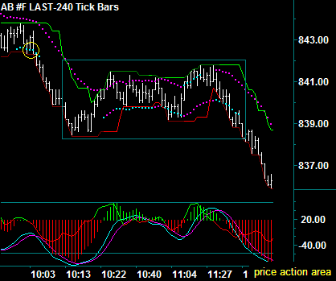{kind=link}
In this case, relating to the price action area rectangle, there was a left side swing that consolidated between the swing low and resistance, which was evident where the sell swing last broke - observed by the yellow circle.
Price Traders
The price trader is the analyst who tries to figure out exactly what a stock is worth.
Price traders are the most common type of trader in the stock market. Price traders buy a stock based on a fixed price. For example, they study Apple Computer (Nasdaq: AAPL) and determine that based on the company's public information as of August 2013, the stock is worth $400 or $425 or $387.25 a share. Price Traders buy the stock if it is below that value and sell the stock if it is above that value.
Because of price traders, stocks often trade up to a certain value and stop. Stocks also tend to trade between values quickly. For example, stocks - any stocks - tend to be more volatile when their stock price is between $45 and $50 as well as $90 and $100.
Some stocks also tend to "trade on the fives and tens" - meaning that the stock will trade at $5, move very quickly to $10, and then move very quickly to $15. This is due in part to option strike prices, which have either $5 or $10 separation in strike prices. Stocks with $5 option strike prices will often trade at the $2.50 level as well. This phenomenon is often seen most clearly at the end of a month when option expiration occurs.
Price traders never arrive at the same value for a stock. Given the hundreds, perhaps thousands, of individual criteria that can affect stock value, the only way two price targets end up being the same is by agreement or cohesion among analysts. As such, stocks tend to move quickly between common price targets.
In the end, the systems used by traders to buy and sell stocks force them to be price traders and traders tend to enter round numbers into these systems. This creates a situation where stocks tend to trade to round numbers: $1.00, $0.50, $0.25 and $0.75.
Detrimental Traders
Introduction
Traders have many different ways of exposing their intentions. At opposite extremes, there are:
- Traders who actively publicize their interest in ways that will be fully credible to the other side. Traders may do this by submitting locked-in limit orders to systems that widely disseminate their interests.
- On the other extreme, traders can reveal their interests only to a broker (or an exchange) and then only when the broker can arrange a trade with someone else who has displayed a good order. Only the broker will know who initiated the trade. The other side will learn of the trader’s interest only after the broker arranges the trade. In some brokered markets, the broker may even be a computer.
A multitude of exposure levels and strategies lies between these two extremes.
Trading is the result of a successful bilateral search in which buyers look for sellers and sellers look for buyers. When the buyers and sellers are easy to find, they (or their brokers) can easily arrange their trades. This simple observation helps explain why trading tends to consolidate into a single central market. Traders who display their interests make it easy for other traders to find them.
Exposing trading intentions can definitely have some significant negative consequences. These costs are due to the actions that other traders may take in response to the exposed information as can be witnessed in the types of traders listed below.
Market manipulators
Market manipulators, using false or misleading appearances, make a deliberate attempt to interfere with the free and fair operation of the market, and attempt to or act to create an artificial change with respect to the price of a security or a market movement with the intent to make a profit.
Examples of this type of activity are:
- Wash sellers - Traders who sell then quickly re-buy the same security, hoping to create the impression of increased trading volume, and therefore raise the price.
- Churners - Traders who make both buy and sell orders through different brokers to create the impression of increased interest in the security and raise the price.
- Poolers - In which agreements, often written, are made among a group of traders to delegate authority to a single manager to trade in a specific stock for a specific period of time and then to share in the resulting profits or losses.
- Stock bashers - Bashers make up false and/or misleading information about the target company in an attempt to get shares for a cheaper price. This activity, in most cases, is conducted by posting libelous posts on multiple public forums.
- Rampers (of the market) - Traders’ actions are designed to raise artificially the market price of listed securities and to give the impression of voluminous trading, in order to make a quick profit.
- Pumpers and dumpers - This scheme is generally part of a more complex grand plan of market manipulation on the targeted security. The perpetrators (usually stock promoters) convince company affiliates and large position non-affiliates to release shares into a free trading status as "Payment" for services for promoting the security. Instead of putting out legitimate information about a company, the promoter sends out bogus e-mails (the "Pump") to millions of unsophisticated investors (Sometimes called "Retail Investors") in an attempt to drive the price of the stock and volume to higher points. After they accomplish both, the promoter sells their shares (the "Dump") and the stock price falls like a stone, taking all the duped investors’ money with it.
- Bear raiders - Traders attempting to push the price of a stock down by heavy selling or short selling.
- Runners - Traders who create activity or rumors (painting the tape) in order to drive the price of a security up. An example is the Guinness share-trading fraud of the 1980s.
Manipulation can be used to both increase and decrease prices, depending on the investor's perceived needs. Manipulation is illegal under the Securities Exchange Act of 1934.
Parasitic traders
Parasitic traders profit only by exploiting other traders. They use exposed information to create trading strategies that profit at the expense of the exposing traders. They generally do not add value to the market. In particular, parasitic traders neither provide liquidity nor make prices more efficient. Since parasitic traders take from the markets without giving, they tend to degrade markets.
"Parasitic traders use exposed information to profit at the expense of vulnerable traders."
- Lawrence Harris, Professor of Finance at USC and former Chief Economist at the Securities and Exchange Commission
An example of parasitic activity is when large traders display their interests by revealing three types of information useful to other traders - why they want to trade, the potential price impacts of their future trades, and their valuable trading options. Parasitic traders may front-run the larger orders or they may try to extract value from the trading options that large traders offer, which can impose costs upon the exposing trader.
Defensive traders
Defensive traders use exposed information to protect themselves from traders that would otherwise harm them. Their response to exposed information is to refrain from trading. They often make markets more price-efficient when they refrain from trading.
Using the same example above, a defensive trader may refuse to offer good terms to the large traders, which again will impose costs upon the exposing trader.
Squeezers
Squeezers hope to profit from controlling one side of the market so that anyone who has to liquidate a position on the other side must come to them. They can also be classed as parasitic traders because they design trading strategies that generate profit only when they can exploit other traders. Squeezers generally acquire their power by surreptitiously cornering the market before traders on the other side realize that they have lost the option to negotiate with others. Squeezers are unwilling to reveal their plans before they set their traps. Otherwise their prey will escape.
Arbitrageurs
This type of stock trader simultaneously buys undervalued and sells overvalued instruments.
Arbitrage transactions in modern securities markets involve fairly low day-to-day risks, but can face extremely high risk in rare situations, particularly financial crises, and can lead to bankruptcy.
There are several risks associated with arbitrage traders, such as:
- Execution risk - Generally it is impossible to close two or three transactions at the same instant; therefore, there is the possibility that when one part of the deal is closed, a quick shift in prices makes it impossible to close the other at a profitable price. Competition in the marketplace can also create risks during arbitrage transactions. As an example, if traders were trying to profit from a price discrepancy between IBM on the NYSE and IBM on the London Stock Exchange, they may purchase a large number of shares on the NYSE and find that they cannot simultaneously sell on the LSE. This leaves the arbitrageur in an unhedged risk position.
- Mismatch - Another risk occurs if the items being bought and sold are not identical and the arbitrage is conducted under the assumption that the prices of the items are correlated or predictable; this is more narrowly referred to as a convergence trade. In the extreme case this is merger arbitrage, which can produce disastrous losses.
- Counterparty risk - As arbitrages generally involve future movements of cash, they are subject to counterparty risk if a counterparty fails to fulfill their side of a transaction. This is a serious problem if one has either a single trade or many related trades with a single counterparty, whose failure thus poses a threat, or in the event of a financial crisis when many counterparties fail. This hazard is serious because of the large quantities one must trade in order to make a profit on small price differences.
- Liquidity risk - Arbitrage trades are necessarily synthetic, leveraged trades, as they involve a short position. If the assets used are not identical (so a price divergence makes the trade temporarily lose money), or the margin treatment is not identical, and the trader is accordingly required to post margin (faces a margin call), the trader may run out of capital (if they run out of cash and cannot borrow more) and be forced to sell these assets at a loss even though the trades may be expected to ultimately make money. In effect, arbitrage traders synthesize a put option on their ability to finance themselves.
Bargain-hunter traders
These traders circle like eagles waiting for the weak and wounded to fall, and then they pick up the pieces. Many companies owe their survival in hard times to the bargain hunter. Kmart is one company that pulled through and recovered after Wall Street left it for dead.
Player traders
At first glance this trader may not seem to have a viable place in the market, but looks can be deceiving. This trader wants to roll their money over and trade stocks constantly - that is part of the game. They are only interested in research and learning as long as there is money to play with.
Bluffers
Bluffers are generally unwilling to reveal their intentions. Bluffers attempt to fool other traders into trading unwisely. For example, they may buy quietly to acquire a substantial position. They then buy aggressively to convince people that informed traders are competing to profit from some piece of news. They then sell to momentum traders who foolishly try to profit from the “news” that they have inferred. The strategy works when traders are easily fooled. It fails when value-motivated traders recognize that the bluffer has pushed prices away from their fundamental values. Bluffers do not want to reveal their trading intentions because they do not want value-motivated traders to call their bluffs. Since bluffers profit only when they exploit other traders, bluffers are also classed as parasitic traders.
Bluffers also want to expose their trading after they have acquired their positions. To trade out of their positions profitably, they must encourage momentum traders to follow them. They do this by convincing other traders that they are well informed. Since well-informed traders often trade aggressively, bluffers try to fool other traders by trading aggressively. At this point in their strategy, bluffers want other traders to notice their trading. They are then willing to expose their orders, but certainly not their strategy.
Rogue traders
A rogue trader is an authorized employee making unauthorized trades on behalf of their employer. It is most often applicable to financial trading, where professional traders make unapproved financial transactions.
Men like Kweku Adoboli and Jerome Kerviel, and other rogue traders like Nick Leeson of Barings Bank (who lost $1.3 billion) or John Rusnak of Allied Irish Bank (who lost $691 million), do not intentionally set out to blow things up.
Instead, the trouble usually starts small - an attempt to cover up a modest portfolio loss, or to make a poor reporting period look better.
The goal is to make a little extra money quickly - enough to cover the small problem - and then go back to normal, with no one the wiser.
If the double-down scheme works, the traders’ names never shows up in the news. They may even earn a nice bonus at the end of the quarter.
But if it doesn't work, and the initial loss snowballs, that's when the real trouble begins. As problematic losses become too big to manage, desperation kicks in. Bigger and bigger bets are made, until finally it all unravels.
This activity is in the grey area between civil and criminal illegality for the reason that the perpetrator is a legitimate employee of a company or institution, yet enters into transactions on behalf of their employer without permission.
The effect on other traders
On a much smaller scale, the same thing can happen to an individual investment account. Not the fraud part, per se, but the compounding disaster from a "rogue trade."
In this instance, a small loss is allowed to develop into a bigger one: A bad investment is ignored, or even added to on margin, and so on. This is where the story takes on a sour note.
Here are some “rules of thumb” for keeping "rogue trades" out of your trading:
- Always know your exposure.
- Always know your risk points.
- Don't buy more without a plan.
- Don't forget correlation.
Unsuccessful Types of Stock Traders
Financial failure and unsuccessful trader stories related with stock trading are quite common. Trading stocks with consistent profitability is a most difficult occupation, with an estimated failure rate of at least 90% where short-term investing is involved, such as day trading.
There are many reasons that this failure rate is so high, such as:
- Most new traders start out with too little capital, and the expectation of being able to pay their bills with their trading profits is not met.
- Many traders, particularly new traders, start without a coherent game plan or strategy to trade.
- The unpredictability of the markets, especially in the short-term.
- The large number of corporate and financial scams and fraud among listed companies.
- Poorly controlled advertisements and biased aggressive advertising campaigns related with trading, brokerage and stock picking strategies.
- Largely unregulated publications that are inaccurate at times as well as poorly conducted courses that are not credible in many instances attended by traders hoping to get rich by trading on the markets.
- Allowing widespread promotion of inaccurate and unproven trading methods for stocks, bonds, commodities, or Forex.
It is obvious that speculation in stocks is a risky and complex occupation because the directions of the markets are generally unpredictable and at times, lack transparency. This does not invalidate the well-documented true stories of large successes and consistent profitability of many individual stock investors and stock investing organizations within the history of the stock market.
But in any situation the opposite exists, and this is true in regard to traders. Opposite the successful traders who trade with the necessary moderation, there are those who trade excessively without realizing that they are signing up for sure losses….their money disappearing into the dark, blue yonder.
Over-traders
Over trading is the excessive buying and selling of securities by an investor in order to increase the probability of successful trades. It is an affliction difficult to self-diagnose and a very enjoyable way to go into Chapter 11.
Many traders recognize it easily in others, but not in themselves. Over-trading is a psychological problem that consumes profits and destroys trading capital.
For many traders, the two main roots of over-trading lie in a need to chase the market to recover losses, and in a desire to look busy. The first leads down a road to gambling. The second, the impulse to look busy, usually costs the trader a great deal.
Two types of over-traders:
Type I: Technical over-traders
Novices in trading justify their actions by the technicalities of this field. Many of them find some technicalities working to their advantage. They then make pre-determined positions and look for some indicators to confirm their choices.
Type II: Impulsive over-traders
Traders who make use of non-statistical or non-mathematical data often rely on other people's opinions, on the news, on their personal observations and hunches and advice by so-called experts or gurus. The problem with these is that they cannot compensate for quantifiable data and that the discretional over-trader finds it hard to stay put because of them. They cannot stand inactivity thus they have to satisfy their compulsion to trade. The lack of assessment of sufficient indicators and enough technical knowledge is often the downfall of a trader.
Over-trader example - an extreme case
In 2013, two former employees of JP Morgan Chase, Javier Martin-Artajo, a manager, and Julien Grout, a trader were suspected of concealing a near £4bn trading loss from the heart of its UK operation in Canary Wharf. Federal investigators said the men were suspected of trying to cover up a $6B trading loss in 2012.
The losses at the heart of the JPMorgan case stemmed from outsize wagers made by the traders at the bank's chief investment office in London. The traders used derivatives - complex financial contracts the value of which is typically tied to an asset like corporate bonds - to bet on the health of other large companies. The trades turned sour, racking up steep losses for the bank.
Over-trading is avoided when traders accept that significant rewards do flow from work that does not involve long hours, stress or sweat. They must appropriately value their intellectual and analytical contribution to the process of trading and accept their rewards as commensurate with this. They must understand no additional work is required to justify their income.
Pseudo-informed traders
They act late and then lose because they tend to buy when prices are already high and sell when prices are already low.
Conclusion
There are a great many different types of traders, and within each category there are sub-categories, and sub-sub-categories, etc. Traders will adopt their own style of strategy. It is not a "one size fits all" market. Anyone looking to join the list of stock market traders and make money in the short or long term should decide which strategy or strategies work best for them.
Traits of top traders/investors
It is important to understand, and if possible, emulate the qualities that most top traders/investors have, to profit from the stock market! Many of these qualities can be developed if there is a willingness to succeed. With a commitment to improvement in one’s trading skills, and adhering to certain business stratagems, profiting from the stock market, in whichever form a trader feels comfortable, is feasible. Here are some traits of successful traders that may be of help:
- Personal responsibility - Probably the most important trait that all top traders have (or top people in any field) is the ability to assume total responsibility for what happens to them. And for top traders and investors, this means that they assume total accountability for their investments results.
- Commitment - Becoming a successful investor/trader requires hard work. Traders must get to know themselves intimately because they are the source of their trading performance. They must develop a business plan to guide their trading. They must develop and test three or four strategies that fit within the big picture (as they see it) and then become part of their business plan. They must do their homework constantly. They must set routines and follow certain disciplines during the day on a constant basis. And all of this requires a lot of time and energy - and it is only the people who are really committed who will put in the work necessary to become successful.
- Control of mental state - There are many tasks to be adhered to when trading, but the key to following those tasks is control of one's mental state.
Each task requires a particular mental state in order to execute it properly and a trader must have the skill to step into that state and perform the task. There are many tasks required, some of which are - daily self-analysis, daily mental rehearsal, developing a low-risk idea, following the lead, taking action, monitoring, terminating bad positions, taking profits, daily debriefing, periodic review, etc.
For example - One of the tasks of trading is the action step of terminating or taking profits. The mental state required is 100% commitment to action. There is no thinking involved -- just 100% action. A trader should already know what to do when they get this signal because they’ve already developed a system that works. Thus, their job is simply to act. Think about when the tiger starts to leap on the antelope. They don’t suddenly think to themselves, “Is this a good idea?” If they did that, they’d probably miss the antelope and break their back. No, their mental state is 100% commitment. Well, each essential task of trading requires a particular mental state and traders must have the ability to step into that state.
- Top-down discipline - In developing this sort of discipline, a trader must go through a series of steps in regard to their expectations in life, and particularly what they wish to achieve from their trading, the action needed to achieve these goals, until the final stage of reality where success is achieved.
The net result of following these steps is that they develop a top-down discipline that helps them develop commitment and achieve almost anything they set their mind to achieving.
In summation:
No matter the style of a stock trader, and the category it falls into, or which best matches their stock buying interests, all types carry risks and potential to the trader’s financial well-being.
There is a place for all traders and investors, and while there are winners and losers in the market, the important thing is for traders to pick a comfortable place and not to let anyone force them out of their comfort zone, particularly if they are doing well.